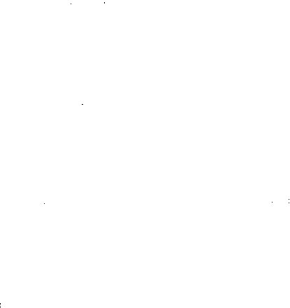

yeriz. »
-«Bağımsızlık Günü mü ? »
- «EveL' Şöyle bir düşündü. «Sizin 1 Mayıs
gibi. Özgürlüğümüze kavuştuğumuz gl:n. Yarın de[!;il ertesi gün kutlayacağız. »
- «Yarın değil ertesi gün, benim doğum gün Um. » Rus subayı gülümsedi. «Çok budala bir adam
ımı sen, fakat kuvvetine diyecek yok. Altı kuş için
bütün mürettebatımla döğüştün. Kuşlar sizin için çok
önemli olmalı. »
Terazi kefesinin kendi tarafına ağır bastığını
sezinleyen Suki suskun kalmayı seçti. Vorolokov sırıttı :
- «Bu kadar hüyük hindi hiç yememiştim. 1ki
kuşa karşılık seni serbest bırakacağım, fakat bu budalalığın tekrarından kaçın. »
Suki 'kabul' anlamında başını salladı. Dört hindiyi ve arama esnasında çıkarılmış olan katılarını varilin içine yerleştirdi. Havayla temastan koruyucu
tabakayı özenle sardı ve varili hiç zorlanmaksızın
omuzuna vurdu. Bunları yaparken elini çabuk tuttu.
Rusların fikirlerini değiştirmesine kalmadan çekip
gitmek niyetindeydi.
- « Size biraz böğürtlen sosu göndereyim, » de-
fli.
Hava tüpleri ve dalmak için gerekli diğer şeyler,
ip merdivenin alt başında, kayaların üstündeydi. Bunları varille dengeli bir şekilde öteki omuzuna yüklendi. Trolün güvertesine küpeşte boyunca dizilmiş kendini gözleyen başlara doğru bakıp gülümsedi ve dikenli telden çite yöneldi.
Onu gören nöbetçi geçitteki kapıyı açtı, Suki
halinden ho�:ıut, neşeli, başını salladL «Yankee Do·
144
odle»u ıslıkla çalarak, salına salına yürüdü.
Amerikan kesiminde sırtını sıvazlayan, omuzunu
okşayan övgüler yağdı
,
ran arkadaşları hemen çevresini kuşattılar.
- «Neredeyse eşyalarını bölüşmeğe oturacak-
tık. »
- «Hesabın tamam diye düşündük. »
- «Ne yaptın ?»
- «Nasıl becerdin ?»
Suki hava tüplerini yere bıraktı. Sonra bü'yük,
siyah varili Zeke'ye verdi.
- « Sizlerin bana seksen dolar borcunuz var,»
dedi.
Ses : «Burası Beyaz Saray,» dedi.
Başbakan : «Aradığınıza sevindim, » diye karşı�
lık verdi. «Biraz tavsiyeye ihtiyacım var. »
Hattın öbür ucundan gelen sesteki şaşkınlık to
nu belirliydi : «Tabii. »
- «Bir türlü gelişip serpilmeyen kaktüse ne
yapmak gerek? »
Özel hatta, göğüs dolusu bir soluğun yavaşça
koyuverilmesinden çıkan bir ses işitildi.
- «Ne oldu da gelişmiyor ?»
Biraz önceki babacan eda ansızın silinip gitmiş-
tı.
- «Traş ettim.»
- «Traş mı ?» Bir sessizlik oldu. < Gelişmeyip
kendini koyvermesine şaşmamak g.erekir. Bel kemi
ği kırılmış demek. » Karşı tarafta konuşan, kendi şa·
kasını çok beğenmiş gibi keyiflenmişti. «Ünu bir politikacıyla aşılamağa bakın, dikenleri yine çıkar. Şim ·
di Ada sorununa gelelim . . . »
Başbakan : «Peki ama, kaktüsüm, » diyecek ol-
du.
Teksas ağzıyla konuşan sesin sahibi : «l.l'zübı'�
yin » dedi. < Başka bir kaktüs gönderirim. Şimdi Ada
meselesini konuşalım .. . »
145
f/1 0
10
- «Hay canına yandığım, burası sıcaktan kaynıyor. » Karaderili Baş Çavuş Hennessey, güneşe ver··
diği koyu kahverengi gövdesiyle şöyle bir döndü.
«Tenimin rengi nasıl ?»
Suki güldü.
- «Mükemmel, Çavuş. Her geçen gün biraz daha fazla Zenciye benziyorsun. Yakında İrlandaiı tarafından iz, eser kalmayacak.»
Hennessey'in, başını nişanlayıp fırlattığı yarı
yarıya dolu Coca-Cola tenekesinden yana kaçındı.
- «Seni çekik gözlü sarı yamyam. Biraz beyaz
lrnnı taşıyorsan, o da yediğin misyonerler yüziinden.»
Sıiki, Hennessey'in sırtına bir dalış yaptı. Kalın kollarını onun göğsünün çevresinden doladı, ayaklarını yerden kesip havaya kaldırdı. Rahatça taşıdı
ğı Hennesse'y'le birlikte denize koştu.
- «Seni yıkayıp iyice ağartacağım. Olduğundan daha beyaz yapacağım, ahbap.»
Gülmekten katılıyorlar, köpüklenen suyun i�inde cebelleşiyorlardı. Sırtüstü yatıp, suyun daha derin olduğu yere doğru açıldılar. Hemen heP.1en üç yüz metre kadar böylece yarıştılar.
- «Hey, üzerinde yaşadığımız şu çakıl ta.şma
alıcı gözle bir bak, arkadaş. »
Durdular. Hafiften çırpıntılı Atlas Okyanusunun
yüzünde Ada ancak seçiliyordu. Trol yavaş yavaş yol
al.ıyormuş gibi görünüyordu. Sadece portakal �·engi
çadırın tepesi ve onarılmış bayrak direği açık seçik
farkedili'yordu.
Suki : «Bir savaş için çok küçük yer,» rledi. «Uğrunda savaşmağa değmez. bile. »
- «Savaş olacağı falan yok, küçük. Ruslar mesele çıkarmak istemiyorlar. Onlar asker değil »
Hennessey'in bacağı suyun altındaki yosunlara
146


değdi. Bu temas, onu tedirgin eden bir dü1ünceye
yol açtı.
- «Bu çevredeki köpek balıkları insan eti yiyen
cins mi acaba ?»
- «Öyle olsa bile senin için tehlike yok. Mutlaka korkmak istiyorsan, fok balıklarını düşün. Güneş yanığı teninle seni bir deniz ineği sanıp ıızına g:eçmeğe kalkışabilirler. Gene de için rahat etsin, şortumun cebinde çakım var. »
- «Çakıyla köpekbalıklarının hakkından gele ·
mezsin. »
Suki : «KÖpekbalıklarını haklamak isteyen kim ?»
dedi. «Köpekbalığı yakına gelecek olursa, çakımla senin koluna bir çentik atarım, Kan kokusunu alıp se-·
nin peşine düşer. Ben de rahatça yüzüp uzaklaşırım. »
- «Eksik olma, ahpap. İnsanın senin gibi dostları olduktan sonra komünistlere ne lüzum var ?»
Dönüp kayalara doğru yüzdüler ve sığlık yerde
hiç çaba harcamaksızın kendilerini suya bıraktılar.
Hennessey :
- «Aramızda bir şişe elden ele dolaşmıyalı nice
zaman oluyor,» dedi. «Limey'in bir şişe içkisi var ama, kimseye koklatmıyor. »
Suki, bir kayanın yüzündeki siyah, küçük denizböceğini kazıdı.
- «Geçen yılı hatırlıyor musun ? Napoli'deki o
Tanrının cezası geceyi. Seni nasıl sırtımda taşıyordum ? Sonra meçini yürüttüğün o polis . . Marifetlerin bize bir aylık maaşa patlamıştı. Su katılmadık piçsoyunun tekiydi, her zaman için de öyle kalacağına kalıbımı basarım. »
Kayalıklardan onlara bakan Clancy ParadiEe :
«Hey millet, şuraya bakın,» diye seslendi. « Aşağıda
acaip renkli bir çift balık yüzüyor. Balıklardan sı:>.rı
olan küfle besleniyor. Rengi sarı olup küfle beslenen
şey nedir, arkadaşlar ?»
Cevap hemen ve koro halinde geldi. Yarım düzi--
147
ne deniz piyadesi :
- «Sifilis ( * ) » diye bağırdı.
Çınlayan kahkahalar yükseldi. . .
Morelli : «Hadi top oynıyalım, » diye bağırdı.
Büyük, yumuşak topu bikinili Victoria'ya attı.
Genç kız topu tuttu, Albert'e doğru yarım dönüş
yaptı ve fırlattı. Albert'in beş metre açığına düşen
topu çitin öte tarafındaki Rasputin tuttu. Morelli'nin
bağırıp çağırmalarına aldırmaksızın yemeğe çalıştı.
Birkaç yerinden diş yiyen top, tekrar genç kıza fırla.tan Lev tarafından kurtarıldı.
Corrigan'ın bir kaşı yukarı doğru çekildi. Bu
Ruslar tarafından yapılan ve kendinin gördüğü açık
seçik ilk dostluk hareketiydi. Uzanmış güneşlendiği
kayadan dirseklerini destek yaparak doğruldu ve
dikenli telden çite doğru yürüdü. Göğüs cebinden bir
Luck'y Stirike paketi çekti. Lev'e bir sigara ikram
etti. Rus gemici bir an duraladı, sonra sigarayı aldı.
Corrigan çitden uzanıp onun sigarasını yaktı. «Sıcak»
dedi.
Lev : «Da,» diye karşılık verdi.
Corrigan kendini işaret ederek : «Corrigan» de-
di.
Lev : «RUS» diye karşılık verdi.
Corrigan yine kendini gösterdi. «Amerikan» de-
di.
Rus bu kez : «Lev» dedi.
Corrigan elini Rasputin'e doğru salladı. «Alsas
( * * ) , » dedi.
Lev tekrar : «Rus» demekle yetindi.
Corrigan, elini dizlerinden belinin hizasına kadar yükseltti «Büyük» dedi.
Kollarını iki yana .açan Rus : «Kocaman» dedi.
Oorrigan tek keUmelik bir konuşmadan bezme-
(*) Frenginin tıp dilindeki adı. - Ç.N.
( ••) Alsas böglesinde yetiştirilen ve bu adı alan köpek
148
ğe başlamıştı. Lev dostça davranıyordu ama, çok az
İngilizce biliyordu. Deniz piyade Binbaşısı, konuşmayı çok çabuk keserse Rusun alınabileceğini düşündü. Lev'i işaret etti. «Gemici,» dedi.
Lev başını salladı «Balıkçı». Sonra Corrigan'ı
işaret etti. «Asker» .
Bu kez Binbaşı başını salladı. «Deniz piyadesi»
Lev'in gözleri ışıldadı. «Ah, gemici»
Corrigan şöyle bir duraladı. «Hayır» dedL «Yarı
denizci, yarı asker. »
Lev yine : «Ah,» dedi. Güldü. Bir an doğru kelimeyi aranıyormuş�asına suskun kaldı. Sonra «Denizkızı» dedi.
Corrigan da güldü.
- «Eh, bir bakıma benzerlik olduğu söylenebilir. »
Binbaşı içinde bulunduğu durumdan Victoria tarafından kurtarıldı. Genç kız : «Tutun» diye bağırdı.
Bu kez topu bile bile, hesaplayarak, çevik bir
hareketle tutan Rus'a fırlattı. Rusun tüfeği omuzundan koluna kaydı. Tüfeği çıkarıp bir kayaya dayalı bırakmayı daha uygun buldu.
- «Eyy . . . »
Lev omuzunun üzerinden ba_ktı. Ellerini başının
üstünde kaldırmış olan İgor yirmi metre ötede duruyordu. Lev'in atışını ustaca karşıladı ve topu telin üstünden aşırmacasına attı. Morelli topu tutmak için birkaç adım geri koştu. Daha yüksekten tekrar
Rus kesimine gönderdi, Bu kez topu 'yakalamağa
Mişa sıçradı. Yumuşak top yine Amerikan kesimini
boyladı. Gelen topu Corrigan tuttu ve Rus gemisinin
bulunduğu yöne attı.
Grup büyüdü. Çok geçmeden, görevde olmayan
balıkçıların, deniz piyadelerinin hemen hemen hepsi
oynuyorlardı. Rusların küçük adını öğrenen erler,
topu onlara atarken bağırıyorlardı. Ruslar da Ame-
149
rikalıların soyadlarıyla sesleniyorlardı. Adamlar sır ·
sıklam kesilmecesine terliyorlardı. Kendilerini oyuna
kaptırdıkça, ağır gelmeğe başlayan giyeceklerinden
sıyrıldılar.
İgor, kara derili Baş çavuşa seslendi :
- « Ey, Ennessee.»
Kazak, denizin yüzündeki büyükçe, plastik bir
işaret şamandırasını gösterdi ve onun peşinden koştu. Telin iki yanındaki yarı giyinik adamlar da onu izlediler. Hafif çırpıntılı dalgalarla salınan portakal
rengi şamandıraya ulaşmak için yarıştılar. Bağrışıp
çağrışmalı top oyunu suyun içinde devam etti. Kurallara kesenkes uyulan bir su topu maçı olduğu söylenemezdi. Tarafl.ar belirli değildi. Oyunun gidişa1 ı, adamları Rus gemisinden ötelere sürükledL Oyunu
sürdürerek, Amerikan kesiminin sığlık yerlerine kadar geri döndüler.
Kara sularını ayıran gözle görülmeyen çizgi U·
nutulmuştu. Buna rağmen, karaya çıktıkları zaman
adeta içgüdülerine uyarak, dikenli telden çitin ayırdığı kendi kesimlerine çekildiler. Sadece dikenli te·
lin ayırdığı adamlar, kayalık sahilde konuşup söyle
şerek yorgunluk çıkardılar. Islak bikinisinin hemen
saydamlaştığını farketmemezlikten gelen Victoria
onların arasında oturdu. Coca-Cola definesine giden
Suki, elleri kolları buz kesmiş tenekelerle dolu dön ·
dü. Teneke kutuları dağıttı. Rusların ve Amerikalı·
ların açtıkları teneke kutulardan tıslamayı andının
sesler geliyordu. Kuralların hasıraltı edildiği maçın
çekişmesi geride kalmıştı.
Birkaç günden beri, Sovyet balıkçıları dalgaların kıyıya doğru sürüklediği tahtaları topluyorlardı.
Bunları Rus teknesinin burnundan birkaç metre ileride bir ehram görünüşünde istiflemişlerdi. Durum Amerikalıların arasında bayağı bir merak kaynağı
olmuştu.
Şimdi de, iyice silinip temizlenmiş uzun masa-
150


larm, yanyana oturulan aralıksız sıraların tekneden
indirilmesi ve istiflenmiş tahtaların çevresinde kocaman bir at nalı meydana getirecek düzenle yerieştirilmesini gözlediler.
Hennessey : «1gor, ne 'yapıyorsunuz?» diye sor-
du.
!gar ellerinin üstünde dengelenerek bir iskemle ·
nin arkalığında amuda kalktı ve aşağıdan yukarıya
doğru cevap verdi :
- «Bu gece şölen var. Kaptanın doğum g:ünii. ;>
- «Ateşte bir şeyler mi çevireceksiniz ?
- «Da. İstakoz, balık ve sizin kuşları. . . Çok vot-
ka . . . »
Hennessey, Suki'ye baktı. İriyarı FilipinH du-
daklarını yaladı.
- «Çok votka mı?»
- «Pek çok votka. Çok şarkı söylemek . . . »
Suki : «Bu gece biz de bir eğlence düzenliyoruz. »
dedi. «Çok Coca-Cola var. »
İgor vücuduna bir tekerlek hareketi vererek
döndü. İskemleyi başının üstünde tutuyordu. Şaşır-
mış gibiydi.
·
- «Yok sizde içki içmek ?»
- «Tabii içeriz. Hem de bayıla bayıla, fakat
kupkuru bir gemiden geldik.»
İgor'un şaşkınlığı daha belirliydi. Suki :
- «Senin anlayacağm, geldiğimiz gemide içki
yoktu.» diye açıkladı.
İgor anlayışlı anlayışlı başını salladı.
-- «Belki onun için kötü şarkı söylüyorsun;» diyerek Hennessey'i işaret etti.
- «Şöhretin dünya çapında yaygınlaşıyor, Çavuş. »
Akşamın erken saatinde Rusların ateşi yandı.
Amerikalılar masaların donatılmasını, Rus ahçının
yardımcılarıyla birlikte koşturup durmasını seyrettiler. Alevler ölüp ateş nar gibi kömürlerden bir ya-151

tak hafüıj alınca, pişirilen şeylerin ve baharlı salçaların kokusu Amerikan kampına kadar yayıldı.
Zeke : «Kaymtıya» ( *) diye bağırdı.
Kantinde 'yerlerine oturan Amerikalılar kendilerini bekliyorlardı. Masanın başında Corrigan oturöu.
Öte başında da küçük bir grup halinde İngilizler . . .
Kentucky'li ahçı bu özel yemeği geleneksel düzenle
dağıttı. Bütün gün kıyasıya çalışmıştı. Yemek ger
çekten nefisti. Victoria, Zeke'den almış olduğu ve a
yakbileklerine kadar gelen bir önlüğü takınarak ona
yardım etti.
Peruğu özenle taranmış olan Rhodes, çatalla kopardıkları lokmaları suskun suskun çiğneyen Amerikalılara baktı. Durgun, ağırbaşlı bir toplantıydı bu.
Umduğu gibi canlı, keyifli bir kutlama olmaktan çok
uzaktı.
Morelli : «Söylesene, Şef, » dedi. «İki yıl önce
Tokyo' da olanları hatırlıyor musun ? »
Corrigan : «Ha-ha, » diye karşılık verdi. «0 za·
man çavuş değil miydin sen ?»
Gülüşmeler oldu. Morelli'nin çavuş şeritlerini
nasıl kaybettiğini hepsi hatırlıyordu. Morelli haksız
lığa uğramış kişilerin yanık öfkesiyle :
- «Orasının bir Japon hamamı olmadığından hala emjn değilim» dedi. «Bana iftira ettiler. ,>
- «Kar taneleri ( * *) senin İngiliz Elçiliğinin
iç bahçesinde anadan üryan yattığını söylediler. Sa·na masaj yapması için bir hanıma asılıyormuşsun.
Kültür Ataşesine söylediğin şeylerin de kültürle hiç
ilgisi yoktu. Ona . . . »
Hennessey'in ci.imlesinin ötesi, büsbütün yük::=e·
len kahkahalar arasında kaynayıp gitti.
Morelli : «Size iftiraya uğradım diyoruın , >> diyt�
diretti. Kim bilir kaç kez prova edilmiş, yapmacıklı
( *) «Yemeğe» anlamına bir argo deyim. - Ç.N.
( ** ) «Askeri Polis» için ku1lanılan bir deyim .
Ç.N.
·
152


masum pozu yine de kimseyi aldatmadı.
Corrigan : «Bu yıl mesele
çıkaramayacaksın»
dedi. «İçki yok. »
Adamlar yine yoğun bir suskunluğa sarındılar.
Sovyet kesiminden gelen şen şakrak sesleri açık se
çik işitebiliyorlardı. Bir hindi budunu dişleyen Suki :
- «Votkaları var. » dedi. «Coca-Cola şişesini verir misin?»
Rhodes suçluluk duygusuna kapıldı. Uyku tulumunun altında, henüz dolu sayılabilecek bir cin şişesi saklıyordu. Kafasının içinde kısa süreli bir çekişme oldu. Sonunda vicdanı galip geldi. Özür dileyerek çıktı ve etiketsiz bir şişeyle döndü. Corrigan'ın önüne bıraktı şişeyi.
- «Özür dilerim ama, hepsi bu kadar. »
Rusların kampında bir kahkaha dalgası daha
yükseldi. Amerikalıların hepsi suskundu. Ağızlarının
hareketi de durmuştu. Gözleri şişeyle Binbaşının yüzü arasında mekik dokuyordu.
Hennessey alçak sesl e : «Hey Tanrım» diye söy-
lendi «Şuraya bak, mazot . . . »
Suki soluğunu koyuverdi. «Pirinç rakısı. »
Morelli : «Grappa» ( * ) diye fısıldadı.
Corrigan şişeye baktı, Nicedir ağızlarına içkinin yudumu değmemişti. Şişeyi açtı, kokladı. «Cin»
dedi.
Bir şeyler umarcasma kendine dikilmiş g.özlere
baktı. «Okey, icabına bakalım» diye ekledi. Şişeyi
Ace'e uzattı.
Genç teğmen bir tören ciddiyeti ve eşi benzeri
görülmemiş bir dikkatle, herkesin kulplu bardağına
bir çorba kaşığı dolusu cin koydu.
Albert teneke maşrapasının dibindeki bir parmaklık renksiz sıvıya baktı. Bu durum ve adamların tutkulu özlemi, ona filimlerde gördüğü cankurtaran
(* ) Renksiz, sert bir İtalyan içkisi
Ç.N.
. �--
153

filikalı sahneleri, değerine paha biçilmez. son yudum
suyun bölüşülmesini hatırlatmıştı.
Corrigan ayağa kalktı : «Hepimiz için.»
Rhodes : «İn manus tuas commendo spiritum
meum,» dedi. Sonra, «Ruhumu ellerinize tevdi ettim,» diye çevirdi.
Boş boş bakan deniz piyadelerinin yüzünde yine bir değişiklik olmadı.
Ace Ellsmore, hukuk danışmanına : «Bir İngiliz
şakası mı, efendim ?» diye sordu.
- «Eee, evet. Öyle sanıyorum. »
Ace çevreye, adamların hala boş, ifadesiz yüzlerine bakındı. «Pekala» dedi. Minnettarlığınızı gösterin. Gülün. »
Deniz piyadeleri güldüler ve içkilerini içtiler.
Adanın Amerikan kesimi şimdi gerçek anlamıyla
kupkuruydu.
Ruslar günü gürültülü bir şekilde kutlamaktaydılar. Karanlıktı. Ateş tazelenmişti. Alevler, masaları ve çevresinde oturan adamları aydınlattı.
Şimdiden kayaların üstünde nöbetçi gibi dikilmiş boş
votka şişeleri duruyordu.
Balıkçılar ve bilimadamı gülüşüp konuştular,
içtiler. Vorolokov, at nalı biçimindeki masanın onur
köşesinde oturmaktaydı. Ötekiler kadar keyifliydi.
Bir elinde votka şişesi, sesinin tonu alabildiğine yüksek, Uşakov'la konuşmaya daldı.
Masalara yemek kalıntıları dağılıp saçılmıştı.
Vorolokov bir istakoz kabuğunun bir parçasını küllük yerine kullandı. Tokuşturulan bardaklar tatlı tatlı çınladılar. Ateşin önünde yatan Rasputin, hiç
kımıldamayacak kadar tıkınmıştı. Keyifli bir gev
şeklikle serilip kalmıştı orada.
İgor bir masanın üstüne sıçrayıp bacaklarını
aralayarak durduğunda, bir tabak çanak şangırtısı
oldu. Ateşin yaydığı a'ydınlıkta sağ kolunu değme tiyatro artistlerine taş çıkartacak bir edayla kaldır-154
dı. Elinde bir bardak tutuyordu. Bugün, geleneksel
Kazak urbalarını giymesine izin verilen sayılı günlerden birıydi. Kazak urbasını çok severdi. Mürettebat onunla hafiften dalga geçerdi ama, atalarıyla bağlarını böylece belirtmesinin öksüz için önemli olduğunu da bilirdi.
Baştan .aşağı siyah pantolonu ve ışıl ışıl cilalı
çizmeleriyle gerçekten se'yretmeğe değer bir görünüşü vardı. Kolları bol, sim işlemeli gömleği ateşin kızıllığını yansıtıyordu. Uzun, gümüş bıçağı işlemeli kemerine sokulmuştu. Dalgalı siyah saçı kabarıktı, bir tutamı alnına düşmüştü. Başının bir hareketiyle, gözlerine kadar düşen saç tutamını geri attı.
- «Kaptanımızın sağlığına» diye bağırdı.
İçti ve boş bardağı geleneksel Rus adetine uyarak ateşe fırlattı. Ötekiler de otomotik bir şekilde onu izlediler. Boris :
- «İgor» diye seslendi.
İgor : «Da» dedi.
- «Ateşe atılanlardan başka bardağımız yok»
Uşakov kahkahalara öncülük etti. Uzandı, genç
Kazağı işlemeli kemerinden çekti. «Öyleyse şişeden
içeriz, değil mi İgor?»
Tanya sessiz Amerikan kampından tarafa baktı. İgor'a :
- «Kibar kişiler gibi sessiz sedasız içi'yorlar, »
dedi. «Çılgın Kazaklar gibi değil. »
İgor : «Bir şey içtikleri yok, » diye karşılık ver-
di. «Çünkü içkileri yok. »
Vorolokov şöyle bir yekindi. «İçkileri yok mu ?»
- «Bugün bana içkileri olmadığını söylediler. »
Saşa : «Öyleyse özgürlüğe kavuşmalarını nasıl
kutluyorlar ?» diye sordu.
İgor : «Ooca-Cola içerek» dedi.
Vorolokov ateşe tükürdü. «Böyle günleri herkes
içkiyle kutlamalı. Gerçek içki içerek. »
Onu destekleyen mırıldanmalar oldu. Vorolokov
155

göğsüne vurdu : «Benim doğum günümde herkes içki içmeli. » Hıçkırdı. «Onlara içki verebiliriz. »
Tanya : «Kendilerine söyleyelim .. » diye araya
girdi. Uşakov tamamladı : «Buraya gelsinler,» dedi.
İgor zıpladı ve havada, ayakları henüz yere değmeden bağırdı.
- «Ben gideceğim» Çitin g,eçit yerine koştu.
Amerikalıların kantinine kadar olan yolun yarısına varmıştı bile. Amerikan çadırlarının arkasında gözden kaybolduğunda, arkadaşları onun «Ennessee,
Ennessee» diye bağırdığını işittiler.
Amerikalılar
şaşkın yüzlerle kantin kapısına doğru baktılar. Bundan sonrası bir şarapnel patlamasından farksız oldu. İskemlesinin iki ayağı üstünde dengelenen Morelli geriye doğru düştü. Kazak, ürkütücü, yabansı görünüşüyle kapının çerçevesinde belirince, Corrigan ayağa sıçradı. İgor elini kaldırdı. «Barış» dedi.
Arkasında, Rusun farkında bile olmadığı, tüfe
ğinin namlusunu İgor'un başından birkaç santim ötede tutan deniz piyadesi eri vardı. Silahlı nöbetçi soran gözlerle Corrigan'a baktı. Sağ elini kaldıran
Corrigan : «Barış» dedi.
Clancy Paradise : «General Custer için üç defa
hurra,» dedi.
İgor : «Kaptan Vorolokov, doğum gününde hepinizin içmeğe gelmenizi istiyor» dedi.
Rhodes davranıp kalkmıştı bile, fakat Victorianın çekiştirmesiyle yine iskemlesine oturdu. Peruğu alnına düşmüştü.
Bütün gözler tekrar Corrigan'a çevrildi.
- «Hımın,» diye söylendi. «Hımın, neden olmasın ?»
Peruğunu düzelten Rhodes, bir yankı gibi : «Ger
çekten» dedi. «Neden olmasın ?»
Corrigan, İgor'a : «Kaptana teşekkürlerimizi bildir, » dedi. «Beş dakikaya kadar geleceğimizi söylersin. » Kantin hep bir ağızdan çıkan «Hurra» sesiyle 156


çınladı. «Bir Coca-Cola iç�r misin ?
Oysa İgor çoktan gitmişti. Corrigan ciddi bir
yüz takındı.
- «Şimdi beni dinleyin. Herhangi bir mesele
çıkmasını istemiyorum. Onların konuğu olduğumuzu unutmayın ve . . . Ve Deniz Piyadelerine yakışan sekilde
,
davranın. »
- «Tabii öyle yapacağız, efendim. İçkilerinin
köküne kibrit suyu ekeceğiz. »
Corrigan kantinde yalnız kalmıştı. . .
Şimdi nöbet tutulmayan geçit yerinden Rus kesimine geçerken, dost tavırlı, içkiye susamış, Amerikalılar evsahipleriyle çoktan kaynaşmışlardı. Hennessey, İgor, Suki ve Boris, herkesten çok kaynaşmış bir grup halinde oturuyorlardı. Boris kalın kolunu Suki'nin omuzlarına atmıştı. Filipinli'nin başı geriye devrikti. Boris, deniz piyadesinin ağzına yarım litrelik bir şişeden votka döküyordu. Suki de ona yardımcı olmak için elinden geleni yapıyordu hak
çası. Akıtılan içkiye yol verirken, . gözleri 'yuvalarından fırlamıştı. Atzı alabildiğine açıktı. Votka bo
ğazına doğru süzülüyordu.
Boris gülüyordu : «Bana yetişmek için henüz
yolun yarısındasın. »
İgor dişleriyle tıpasını çektiği bir şişeyi Hennessey'in eline tutuşturdu : «İç, güzel şarkı söylersin. »
Hennessey'in gözlerinin akı karanlıkta büsbütün belerdi. Şişeyi öptü.
- «Böyle bir şişeden kim bilir ne güzel şarkılar
çıkar. »
Sonra şişeyi dudaklarına götürdü. İçmeğe koyuldu.
Uşakov ayağa kalktı ve gölgelik bir yerde duran Amerikan Binbaşısına yaklaştı. Corrigan ateşin aydınlattığı sahneyi seyrediyordu.
- «Lütfen masamıza onur verin. »
157
Corrigan'ı Vorolokov yanına buyur etti. «Subay geldi» dedi.
Vorolokov ayağa kalktı. Eğilip selamlamakla
sadece elini uzatmak arasında kararsızdı. İkisini birden yaptı.
Corrigan : «Çağrınız için teşekkürler,» dedi.
Vorolokov elinin bir hareketiyle onu susturdu :
- «Lütfen bizimle için. Bugün benim doğum
günüın»
Uşakov'un eline tutuşturduğu şişeyi kaldıran
Binbaşı : «Doğum gününüz kutlu olsun,» dedi.
Açıkçası, partinin ve çağrının Amerikalıları baştan çıkarmak için düzenlenmiş bir tuzak olup olmadı·
ğını merak ediyordu, fakat gösterilen 'yakınlığın, içtenliğin gerçek olduğu besbelliydi. Kendini tedirgin eden şüpheyi aklından sildi.
Tanya, Victoria ile Albert'e :
«Arkadaşlığınız
nasıl gidiyor ?» diye sordu.
Al bert : «Daha yeni yeni ısınmaya başh'yoruz
birbirimize» dedi. Victoria'ya bakıp gülümsedi.
Ateşin yakınında bir kayaya oturdular. Bir votka şişesinden yudumluyorlardı.
- «'Şimdi çevrenizde çok adam var, oyunlar falan oynanıyor» diyen Tanya konuşmayı sürdürmeğe çalışıyordu.
Victoria : «Adamlar oyunlardan bazısı için gere
ğinden fazla, bazısı için de yeteri kadar değil,» dedi.
Albert'e gülümsedi.
Mişa balalaykasını çalmağa başladı. Balıkçılar
şarkı söylediler. Amerikalılar da mırıldanarak katıldılar. Zeke ağız mızıkasını getirmeğe gitti. Amerikalılar «Shenandoah» parçasını çalan Zeke''ye eşlik ettiler.
Boris «Güzel» diyerek hıçkırdı. Gözleri nemlenmişti.
Victoria elini Albert'in blucininin arka cebine sokuşturdu ve ona doğru sokuldu. Albert votka şişesin-158

den uzun bir yudum içti.
Bir saat şarkı söylediler. Şarkı araları, şişelere
yapışan ağızların şapırtılı sesleriyle nakaratlanıyordu. Şa,rkılarının düzeni daha başıbozuk, besteler daha kendi bildiğine bir hal aldı.
Boris : «Yemek» diye bağırdı.
Kızarmış küçük kuşlarla yüklü, kocaman, çelik bir tepsiyle yaklaştı. Kuşları çevredekilere dağıttı. Herkese yetecek kadar kuş vardı.
Kuşlardan birini parçalayan Suki :
- «Vay canına» dedi» Şu kumruya benzeyen,
küçük kuşlar . . . »
Corrigan, Vorolokov'a :
- «Bu kuşlara ne dersiniz ?» diye sordu.
Rus : «Güvercin» dedi. «Boris'de güvercin oldu
ğunu bilmiyordum. Çok lezzetli, değil mi ?»
- «Hey, benim kuşun üzerinde bir telefon numarası var. »
Corrigan, votkayla süzülmüş gözlerini belirli
bir noktada tutmağa çalışan Morelli'ye baktı.
- «Ne demek istiyorsun ?» di'ye sordu.
Morelli kuşun budundan çekip .aldığı küçük, metal plakayı ona uzattı. Plakanın üzerinde «4277-U.S.
Hava Üssü, Frankfurt» yazısı okunuyordu. Corrigan
Amerikan Silahlı Kuvvetleri haberleşme sisteminin
yarı çiğnenmiş bir parçasını tekrar .ağzına tıkıştırdı.
Vorolokov'a : «Bundan iyisi can sağlığı» dedi.
Boşalan tabaklar toplandı. Boş votka şişeleriyle birlikte masanın öte ucun.a yığıldı. Herkes birbirine sigara sundu ve tekrar içildi.
Balalayka yine canlandı. Rus steplerinin uçsuz
bucaksız ıssızlığını dile getiren 'yumuşak, hüzünlü
bir girişti bu. Amerikalılar bile kendilerini bu notaların sarıcılığına kaptırmışlardı. Balalayka, düzlüklerin, dağların, rüzgarların ve yağmurun sesiyle konuştu. Dinleyenleri büyük göllerden aşırdı, 'yabansı ormanlara, kendi halinde köylere götürdü. Yükseldi.
159


Çarpmalar halinde zirveleşti. Rus teknesinin burnundan keskin, kulakları sağır edici bir ıslık sesi geldi.
İrkildiler, yukarı baktılar.
Dirsekleri dışa doğru, ellerini kalçalarına koymuş olan İgor, masalların, efsanelerin dünyasından kopup gelmiş ürkütücü bir görüntü g.ibi geminin baş
tarafında duruyordu. İpekli gömleğinin bol yenleri
ılık esintiyle kabarıktı. Keskin bir çığlıkla sıçradı,
kayalığın üzerine konup doğrulmadan önce, ayakları
öne doğru gerilmiş ellerine değiyordu. Ateşin yaydı
ğı aydınlıkta gözleri alabildiğine açılmış, dudakları
gerilmiş, ışıltılı dişleri alevleri yansıtarak bir derviş
gibi döndü. Balalaykanın müziKle anlattığı hikayeyi,
keskin, şimşek çakmasından ayırtsız hareketlere döktü. Daha hızlanması için müzik ona öncülük etti. Sıçradı ve döndü. Takla attı. Ruslar el çırparak müziğe eşlik ettiler, onun daha hızlanmasını sağladılar. İgor
da hızlanan müziğin gerisinde kalmadı.
Amerikalılar kendilerini dansın coşkulu havasına kapıp koyuvermişlerdi. Ruslarınkiyle tempolu olarak el çırptılar. Kışkırtmacasına, yüreklendirip
coşturmacasına bağırdılar. Saçları uçan, yüzünden
aralıksız ter boşanan İgor, Kazak çizmelerinin topuklarını daha yükseklerde birbirine vurdu.
Müzik birden kesildi. Ayakları yerden kesilmiş,
yükseklerdeki İgor, bitiş hareketini masanın üzerine inerek yaptı. Kollarını iki yana açarak bir dizinin üstüne düştü. Onun ağırlığıyla, masanın öte ucunda yığılı tabaklar karanlığa savruldu. Tabak çanak sesi, coşkulu alkışlara karıştı.
Borlis : «İgor» diye seslendi.
Soluyan İgor : «Da ?» dedi.
- «Bütün tabak çanağımız buydu.»
Sıra yine votka faslına geldi. Boris kendiliğinden yükümlendiği görevde,Suki'nin gırtlağından bir şişe votkayı akıtmakla meşguldü. Şimdi ikinci şişeyi
hoşaltmağa çalışıyordu. Hennessey ölçülü olmağa,
160

arayı korumağ·a bakıyordu.
Özür dileyip masadan ayrılan Ace Ellsmore,
şimdi Amerikan kesiminin hemen girişinde yığılıp
kalmıştı. Bu kadarını da yapabilmesini sağlayan, 'yabancı toprakta asla sarhoş olmayacağına dair babasına verdiği sözdü. Son iki metreyi sürünerek aşmıştı.
Uşakov ve Zeke, ateşin biraz berisinde, birlikte düşüp kaldıkları yerde tam bir haç teşkil etmecesine yatıyorlardı. Zeke hala yakınındaki boş bir şi·
şeyi sıkı sıkı kavramıştı.
Kollarını birbirinin omuzlarına atmış olan Corrigan ve Vorolokov, iki ayrı dilde iki ayrı şarkı söylüyorlardı. Söylediklerinin çok uyumlu olduğunu dü
şünmekteydiler. Toplulukta yegane ayık kimseler olan Tanya ve Victoria için durum gün gibi açıktı.
İki kişi, iki ayrı dilde iki ayrı şarkıyı söylüyordu.
Rhodes kararlı olarak yeni bir şişenin peşine
düştü. üstün, içkiciliğinin tepe noktasına variştı bu.
Bir çaba ayağa kalktı, şişeyi boynundan kavradı ve
portakal çadıra doğru adımlarını sürüdü.
Votkasını yatakta bitirdi.
Düzlükte ölmek üzere olan ateşin soluk kızarıklığında, katlanmış izlenimi veren, haki renk bir külçe hafifçe kımıldar gibi oldu. Kırdığı yumurta kabuğundan çıkmağa çalışan bir civcivi andıran hareketler yaptı. Düşe kalka, yalpa vura vura, ayaklarını sürüyerek Amerikan kampına 'yöneldi. Son bir çabayla bayrak direğine doğru süründü ve direğe yaslana
sarıla kendini yukarı çekmeğe çalıştı. Sonunda tamamen doğrulduğu zaman, yer yer lekeli tüniğinin altından çıkardığı hafifçe yassılaşmış bir boruyu dudaklarına götürdü ve öttürdü. Bir şey olmadı. Tekrarladı. Kalk borusunun sarhoş soluğuyla yarım yırtık, düzensiz ilk notaları Adanın üstünde dalga dalga yayıldı, fakat kimseyi ayağa kaldırmadı. Boru çalan, direkten sarkan ipi tutup ayakta durabilmek için 161
f/1 1
son çabasını da harcadı. Direğin tepesinden çekilen
«Yıldızlar ve Çubuklar» aşağı kaydı, onu şefkatle sarıp sarmaladı. Bayrağının renklerine bürünen borazan devrildi, hareketsiz kaldı .. .
Albert oturduğu kayada hafiften sallanıyordu.
Victoria'ya baktı ve alkolle kızışan bir istek duydu.
- «Ortalıkta bizden başka kimse yok,» dedi.
«Gidelim buradan. Mağaraya gidelim. »
Victoria onu ellerinden çekip ayağa kaldırdı. Al ·
bert yaptığı çağrı için hemen pişmanlıği!. kapıldı.
Ada f\rıl fırıl dönüyordu. Havayla şişirilmiş, uçsuz
bucaksız bir yatağın üzerinde yürüyor gibiydi.
Kayalardan mağaraya inmesi için Victoria ona
yardım etti. Mağara rutubetli ve karanlıktı ama, ne
de olsa yabancı gözlerden ıraktı. Kokusu hiç hoş de
ğildi.
Albert «Öff, » dedi. Midesi kalkmıştı. Kapıya yönelecek gibi oldu. Victoria onu aşağı, yanına çekti.
- «Burası her zaman böyle kokar. Alışman gerek. Çürüyüp kokuşan yosunlardan olacak. »
Onu öptü, soyunmasına yardım etti. Delikanlının kemerini çözerken, sinirli elleri biribirine dolaşıyordu. Albert giyeceklerinin üzerine yattı. Genç kız kaşla göz arasında soyundu ve onun yanına oturdu.
Albert kararsız, tedirgin ona doğru uzandı, gü
ğüslerini öpebileceği kadar yakınına, kendine doğru
çekti.
Victoria : «Sev beni» diye soludu.
Dönüp alta kaydı. Albert .ağırdı. Victoria kaburga kemiklerinin çatırdadığını duydu. Kama Sutra'da bu hususa hiç değinilmemişti Albert'in ağırlığını rahatça karşılayabilmek için kımıldandı. Onu tutkuyla, uzun uzun öptü. Erkeğin alev alev yanan vücudunu boylu boyunca hissediyordu. Parmaklarını hafif hafif sırtında dolaştırdı. Şimdi Albert daha ağırmış
gibi geliyordu.
- «Hadi, sevgilim» diye fısıldadı.
162


Albert yana kaydı.
- « Sevgilim ?»
Albert'in cevabı bir sarhoş horultusu oldu ..
Şafak vakti iki taraftan herhangi birine ait bir
helikopter Adanın üstünde uçsaydı, hiç yolu 'yok 3.
Dünya Savaşı çıkmış olacaktı. Her iki kamp bir savaş
alanını andırıyordu. Victoria yalnız bir gece geçirJi
ği portakal rengi çadırın kapısında!! şö):le bir baktı.
Her yerde serilip kalmış gövdeler vardı. Hala dumanı tüten ateş bütün bu kargaşanın merkez noktası gibiydi. Ateşin çevresinden her yönde adımlarını sürüyen, sonra düşüp kalkan adamlar görünüyordu.
Gün iyiden iyiye ışıyıncaya kadar sarhoşlukları açılmadı. Serilip kalmış gövdelerin çevresinde boş şişeler yayılmıştı.
Amerikalılardan birkaçı düşe kalka kendilerini
çadırlarına atmışlardı. İp merdiven engelini aşamayan Ruslar aşağıda yığılıp kalmışlardı. Victoria'nın gördüğü ilk hayat belirtisi genç teğmen oldu. Kendini kayadan bırakan Ace inledi. Başını kaldırıp yukarı baktı. Başının üstünde daireler çizen iki siyah ku
şu, Des ile Les'i gördü.
Pürüzlü bir sesle : «Akbabalar» diye hırıldadı ve
tekrar yığılıp kaldı.
Albert Ralph Richardson, beyaz tüyünü kimin
geri verdiğini hatırlayamıyordu. Yüzünden birkaç
santim ötede, bir çakıl taşının üzerinde duran tüyü
açık seçik görebiliyordu. Soluğuyla hafifçe oynadı.
Evet, görüyordu işte. Kör falan değildi. Güneş göz
sinirlerini henüz mahvetmemişti. Yakınlıklarını sezinlediği düşmanlarını altedebilirse, erişip Komutanı uyarması için hala küçük bir şansı vardı. Onu tedirgin eden şey, hangi Komutanı ne konuda uyarması gerektiğini bir türlü hatırlayamamasıydı.
Bulanan, fersiz fersiz bakan gözlerle, bir mağaranın girişinde yattlğını gördü. Güneş akkor halindeki ışınlarıyla gözlerini mızraklıyordu. Güneş si-163

perlikli başlığwı arandı. Başlığını da, giysilerini de
bulamadı. Tutsak düşüp kavuran güneşin altında ölüme bır.akıldığı savaşı hatırlamağa çalıştı. Ölmeyecekti. Biri iplerini kesmişti. Bey.az tüy yine oynadı.
Nasıl olduysa gelip burnunu gıdıkladı. üfleyerek tüyü uzaklaştırdı.
Çevresinde hareketsiz yatan gövdeler vardı. Şimdi ölmüş olan arkadaşlarının 'yüzlerini hayal meyal tanıdı. Hareketsiz gövdelerden birine doğru süründü.
Acıyla üzerine eğildi.
Albert Richardson, «Kıyım» diye mırıldandı. . .
«Vahşiler . . . Oysa bütün istediğimiz onları eğitmek,
uygarlaştırmaktı. »
Sıcakta titreşir gibi görünen, kilometrelerce uzanıp giden delik deşik kayaların ötesinde bir bedevi çadırının parlak rengini seçebildi. «Gidip su istemeli, yardım sağlamalı» diye düşündü.
Kamp yerine ulaşması saatler aldı. Kibar İngiliz subayı insanüstü bir çabayla ayağa kalktı. Güzel bir Arap kızı ona destek oldu ve dayalı döşeli yatakhaneye soktu. Orada - ona biraz sertçe gelen - bir itişle ipek örtülerle kaplı yatağa devirdi. Her şey karardı. ... '
Tanya Rus gemisinin güvertesinden b ağırdığı
zaman, Victoria Albert'in giyeceklerini mağaradan
henüz toparlanmıştı.
- «Kahve hazır. Yukarı gelin.»
İki kız Dmitri Kirov'un küpeştesine yaslandılar
ve aşağının perişan, darına duman haline baktılar.
Tanya :
- «Aşağıda tek canlı yok» dedi.
- «Birşeyler yapmamız gerekmez mi ? »
- «Bir şey yapılmaz. Her zaman böyle olur.
Ruslar içerler. Ruslar yere serilirler. Onları kendi
hallerine bırakacaksın. Üniformamı üzerinde bir denemek ister misin ? »
Victoria Tanya'nın bu nazik, içten yakınlığının
164
ardındaki sebebi hemen kestirdi. Victoria'nın giysilerini görmek için örtülü, kibarca bir ima'ydı bu.
Victoria : «Gel çadırıma gidelim» diyerek karşı
çağrıda bulundu. « Giysilerimden bazılarını da sen
deneyebilirsin. »
Tanya kısa etekleri ve gözalıcı kadınsı renkleri
özellikle beğendi. Victoria'nın parlak, açık renk yazlık entarüerinden birini giydiği zaman, sorar gibilerden çantasını işaret etti. Victoria Tanya'nın makyajına yardım ettiği süre çadırda oturdular.
Tanya : «Büyük aynada kendime bakmağa gidebilir miyim ?» diye sordu.
Birlikte Rus gemisine döndüler. Ölü adamlar
yavaş yavaş canlanıyorlardı. Vorolokov ip merdivene tutunarak orada duruyordu. İki kızın gelişini dikkatle gözledi. Toparlanmağa çalıştı, elinin tersiyle gözlerini oğuşturdu. Kızların başları yer değiştirmişti. «Çok, pek çok votka» diye mırıldandı.
Victoria'nm gövdesinin üstündeki Tanya'nın ba
şına baktı. Doğrusu güzel bir bileşimdi. Boynun bağlantısına bakındı. Kusursuzdu. Onu kollarmm arasına almak için ip merdiveni bırakmak gafletinde bulundu. Yine kendinden geçti.
Yıkıntı halindeki son insan da toparlanıp ken·
dine ait yerin yolunu tutmadan önce tekrar akşam
olmuştu. Kimse tek kelime konuşmadı. Hiç kimse tek
lokma yemedi. Dalgaların çarpmasından, üç deniz
kuşunun zaman zaman bağrışmasından ve kendi haline bırakılmış, korunmasız geçit kapısının yumuşak gıcırtılarından başka ses yoktu.
Albert'i yirmi saat sonra uyandıran, alışageldi
ği, yabancı olmayan bir duyuydu. Kıvrılıp karnının
üstüne döndü. Sonra hemen sırtüstü yattı. Elini arkasına atarak poposuna doğru kaydırdı. «Üh, hayır'
Yine aynı şey olamaz, » diye düşündü. Yumuşak ten
yine sürtünmekten berelenmiş, yer yer soyulmuştu.
Sabahın erken saatlerinin soluk ışıltısında bile kıza-
165

nklığının seçileceğinden emindi. Aynı şeyin yine nasıl olduğunu düşünemiyordu bile. Partinin başlangıcmdan beri sadece bir tek şeyi hatırladı. Victoria ile ilgili bir rüya görür gibi olmuştu. Rüya her zamanki gföi yine en kritik anda bozulmuştu. Bu kez seyircilerin alkışı yerine, kayalık bir bayırdan üzerine atılan binlerce Zulu ( * ) vardı.
Kamp uyanmıştı bile. Deniz piyadelerinin, balıkçıların ıo.abahın erken saatinde yüzdükleri denizden bağrışmalar geliyordu. Suya şöyle bir dalıp çıkmanın poposundaki yanmayı serinletebileceği dü
şüncesiyle Albert dışarı uğradı. Kamp derlenip toparlanmış, iyice temizlenmişti. Kayaların dumanla kararmış bir kesimi hariç, çılgınlığa varan �oşkunlukta bir partinin verilmiş olduğunu belirten bir iz yoktu.
_
Victoria belirli bir soğuklukla : «ÜO, demek hala hayattasın ?» dedi. «Hızlı aşık kendilerini bugün nasıl hissediyorlar acaba ?»
- «Bir fırsat ver, öğrenirsin. »
Genç kız : «Partiden sonrasını hatırlamıyor musun ?» diye sordu. «Hatırlayamıyorsan, tek kelime bile söylemeyeceğim. »
Albert serinletici suyun içine oturup düşündü.
Kıvırmış mıydı ? Başarmış mıydı ? Nerede ? Ne zaman ? �Bir daha asla böyle sarhoş olmam.ağa yemin etti.
Arayan : «lci Paris, ( * * ) », dedL «Son durum ne-
dir ?»
Başbakan : «Ölüyorlar, » dedi.
- «Ölüyorlar mı ?»
- «Sinekler gibi. »
- «Sinekler gibi mi ?»
Başbakan : «Evet,» dedi.
( * ) Afrika'da ya§ayan bir yerli kabile
Ç. N.
-·-
( "'i* ) «Burası Paris» anlamına -- Ç.N.
166


Dehşete kapılan Fransa Devlet Başkanı : «Amerikalılar mı, Ruslar mı ?» diye sordu.
Başbakan : «Çoğunluk Güney Amerikalılar ve
Cezairliler» karşılığını verdi.
- «Cezayirliler mi ?»
- «Evet. Saksının bir kenarına doğru yatıyor.
Sahip olduğum tek Aporokaktüs türü bu. Kaktüsler
konusunda bilginiz var mı?»
Hattın öbür ucundakinin şaşkınlığı belirliydi.
Konuşanın Gal asıllı olduğunu açığa veren ses : «Dikenleri vardır,» dedi.
Elektrikli traş makinesini sevip okşarcasına tutan Başbakan : «Benimkiler değil,» dedi.
11
Amerikalıların görünüşü ürkütücü füze rampası, geçip gitmiş gerginliği zorla akla getiren bir şey, muhtemelen kışkırtıcı bir unsur durumundaydı. Binbaşı Corrigan'ın artistik değerlere öncelik tanıyan gözlerine göre, Gainsborough'un ( * ) tablolarında bir
otomobil ne kadar yakışıksız düşerse, denizin temel
unsur olduğu bu görünümde de füze rampasının o
kadar yeri yoktu. Bu düşünceyle Teğmeni çağırdı.
Başıyla füze atıcıyı işaret ederek :
- «'Şu kocaman Ateş Çeşmesinin, şimdiye kadar gördüğün en güzel şey olduğunu inkar edebilir misin ?» di'ye sordu. «Bunu tasarlamak için harcanan binlel'ce yaratıcı saati bir düşün. »
Ace, Binbaşıya garip garip baktı : «Tabii, efendim.»
Binbaşı «Görünüşü gözler için eşi benzeri bu-
( * ) Özellikle peyzajlarıyla tanınan ünlü bir İngiliz res.
sam - Ç. N.
167


Junmaz bir şölen, » diye devam etti. «İnsanm soluğunu kesiyor. Ancak uygarlığa artistik katkıda bulunan. gerçekten gelişmiş bir millet böyle bir şaheser yaratabilir. Aynı fikirde değil misin ?»
Teğmenin bakışındaki şaşkınlık, garipseme bu
kez daha belirliydi. «Evet, efendim, » dedi.
Corrigan : «Öyleyse üstünü örtün,» emrini verdi. «Çevrenin güzelim görünümünü bozuyor. »
Corrigan : «Öyleyse üstünü örtün,» emrini verdi.
«Çevrenin güzelim görünümünü bozuyor. »
On dakika sonra, füze atıcı zeytin yeşili bir
örtünün altında kalmıştı. Bunun ardından şaşırtıcı
bir şey oldu. Balıkçı gemisinin baş tarafında Rus bilimadamı göründü. Uşakov örtülü füze atıcıya baktı ve elini sallayarak Binbaşıyı selamladı. Corrigan öyle bakınırken, Rusların kocaman bir erkeklik uzvunu andıran, kızıl burunlu roketi köprünün ardından aşağı sarkıtıldı ve gözden kayboldu. Roketin indirilip
yatırıldığı yatağın metal kapaklarının kapatılmasından çıkan ses duyuldu. Corrigan düşünceli düşünceli gülümsedi.
Aynı akşam, Corrigan'la Teğmen, kantindeki
masayı Vorolokov ve Rus bilim .adamıyla bölüştüler.
Vorolokov : «Bugün tarihi bir gün,» dedi.
Füze olayını düşünen Binbaşı :
- « Evet,» karşılığını verdi.
- «Bugüniin anısı asla silinme'yecek. »
Corrigan, Vorolokov'un fazla dramatik olmağa
başladığını düşündü. Vorolokov : «Dün geceki toplantımızda yıllık votka stokumuzun hepsini içtik,»
dedi. «Elimizde sadece bu kaldı.» Eliyle, içindeki votka halen etiket düzeyinden aşağı famiş olan, tükenmeğe yüz tutmuş şişeyi işaret etti. «Bu geceden sonra içkimiz yok. »
Ertesi sabah doğan güneş, Dmitri Kirov'un yakınındaki kayalara oturmuş Amerikalıları ve Rusları balık avlarken buldu. Özellikle Deniz piyadeleri ken·
168

dilerini bu işe kaptırmışlardı. Bunu bir spor ciddiye
tiyle yapıyorlardı. Öğrenci olarak alabildiğine heves-li, iyi niyetli, eşi bulunmaz kişilerdi. Ruslar onlara istakoz sepetlerinin nasıi yemleneceğini, zokalarm
kolayına kurtulup çıkmayacak şekilde misinaya nasıl
tutturulacağını öğrettiler. Ağların, sepetlerin nere�
lere atılıp bırakılacağını gösterdiler. Adadaki küçl.ik
teknelerin tümü bu işe ayrılmıştı. Kıyıya yanaşan
bir tekne mürettebatını, tutulan balığı, toparlanan
istakozları boşaltır boşaltmaz., balığın bol olduğu,
henüz el sürülmedik sulara gitmek için çoşkulu bir
heves duyan yeni tayfayla doluyordu. Av insanı şa
şırtacak kadar boldu. Tutulan istakozların muhafaza edilmesi için Ruslar tarafından yapılan tanklarm büyütülmesi gerekti.
Dalma giysileri ve cihazlarıyla deniz dibine dQ
lan Suki ile Hennessey, avladıkları dip balıklarıyla.
gelecekteki sofraları büsbütün zenginleştirdiler. Pavurya kafesleri dayanılmaz çekiciliklerini ispat etti ler. Şaşa'mn uzun, kendi yapısı olan ağı, atanlara ba
yağı zorluk çıkardı. Atıldığından birkaç dakika son
nı. silme balık doluyordu. Boris'in buzluğunun kapıhı.rı, avın bolluğundan güçlükle kapanıyordu.
Aynı mutfakta pişirmek için ahçıların tutuiaı1
balıkları bölüşmesi akla en yatkın davranış göründü.
Bir seferde tutulan balığın Adadaki herkese bölüştürülmesi, iki kesim için ayrı pişirilmesi ne de olsa daha zordu. Zeke, basit bir program yapılıp, bir gü::ı
Boris'in, bir gün kendinin sırayla görevli ahçı ola
rak çalışabileceklerini söyledi. Boris bu öneriyi he·
men kabullendi. Bu sayede öteki avcılarla beraber
Adadan açılabilecekti. Şu sıralarda onu en çok di.i
şündüren şey, büyük ölçüde yokluğunu duyduğu ta
bak, çanak sorunuydu.
Pazartesi, Çarşamba ve Cuma günleri, Ada sa
kinlerini Zeke'nin iki partide doyurmasına karar verildi. Salı, Perşembe ve Cumartesi günleri, Boris'in 169

çalışma günleri olacaktı. Pazar günleri de iş bölümü
yapacaklardı. Düşündükleri şeyi subaylarına açtılar.
Corrigan : «Bana göre hava hoş, » dedi. «Bir de
çocuklara danışın. »
Zeke, deniz piyadelerinin bu fikri çoşkuyla tutup
benimsemelerini pek beğenmedi. Suki : «Tabii,» dedi. «Benim işime gelir. Aklıma gelmişken sorayım, Ruslar balık yumurtasına ne derler ?»
Zeke : «Havyar, » karşılığını verdi.
Filipinli : «Onları iki dakika mı, yoksa dört dakika mı kaynatıyorsunuz ?» di'ye sordu.
Kesin bir karara varmamış tek deniz piyadesi
olan Morelli :
- «Şaşlik'in ( * ) üstüne ketçap koyarlar mı ?»
diye sordu.
Buna rağmen fikir tuttu. İki ahçının ustalığı
tutulan balığın tükenmezliği kadar sınırsız görünüyordu. En çeşnili yemekleri hazırlamak için adeta yarıştılar. Ada sakinleri hayatlarının hiç bir döneminde görmedikleri kadar iyi beslendiler, Tenleri en zengin bronz rengini aldı. Sadece ardı arkası kesilmeyen şölen sofralarını tamamlayacak bir şeyin -içkinin-yokluğunu duyuyorlardı. Coca-Cola stoku bile azalmağ·a yüz tutmuştu.
Rhodes akşamdan kalmalığı unutmuştu. Bunu
bayağı özlüyordu. Akşamdan kalmalık kalkmadığı
zamanlar kendini hasta hissediyordu. Onun halinden
endişeye kapılan Victoria : «Neyin var, baba?» diye
sordu.
Rhodes : «Doğum sonrası bezginliği, » dedi. «Doğmuş olduğum için pişmanlık duyuyorum. »
Başçavuş Hennessey gibi, Rhodes de vazgeçilmez alışkanlıkları olan bir adamdı. Yalnız onunkiler kötü alışkanlıklardı. Cinle kahvaltıya, kuşluk vakti
demlenmesine, öğle yemeğinin dolu dolu kadehleri-
(*) Rusların yaptığı özel bir şiş kebap türü. - Ç. N.
170

ne, çay saatindeki kadeh tokuşturıualarına, saat al-tıda serinlik içkisine, akşam yemeğini şişesiyle renk lendirmeğ·e ve yatmadan önce bir-iki tek atmağa fena alışmıştı. Şimdi rndece yemekle beslenmek, kendine yabancı bir düzenle yetinmek ona zer geliyordu.
Varlığını sürdürmek, yaşadığını duyurmak için bu
kadarını yetersiz buluyordu. Huysuz ve karamsar
dolanıp duruyordu Adada. Sonunda : «Zeke,» diye sızlandı. «Pişirdiğin yemeklerin neyi var bilmiyorum ama, ayaklarımda torbacıklar halinde şişlikler yapı·
yor. »
Aynı zamanda Sıhhiyeci görevini yükümlenen
Zeke onun ayaklarını gözden geçirdi : «Bunların yemekten olmadığına kalıbımı basarım, Bayım,» dedi.
«Dar ayakkabı giymekten olmuş. » Zeke ilk yardım
dolabını araştırıp bir şişe saf ispirto çıkardı.. «İşte,
bununla günde üç kez ayaklarınızı oğuşturun. Tez
zamanda derdinizi giderir. »
Rhodes'in saf ispirtoyu nasıl ve ne zaman içme
ğe karar verdiğini Adadaki kimse keşfedemedi. Uzun
bir .araştırmadan sonra, onu füze atıcının katranlanmış örtüsünün altında buldular. Yüzü mosmor kesilmişti. Bitikti. Yanıbaşmdaki ispirto şişesi boşalmıştı. Zeke ile Uşakov'un önce onun midesini yıkayıp, ardından yarım litreye yakın koyu kahve içirerek
ayağa kaldırabilmeleri için iki saatin geçmesi gerekti. O akşam Rhodes'in üzüntülü dostları mutfak çadırının arkasında bir toplantı yaptılar.
Boris : «Bu adam için içki bulmak şart,» dedi.
«İçkisi varken ayık, içkisi olmadığı zaman sarhoş-·
luvor.
"
»
İgor : «Yani normal haline getirmek için elimiz-den geleni yapmalıyız,» diye atıldı.
Herkes başını sallayarak onu doğruladı, ama
Boris dahil hiç kimse, Kazak İgor'un gerçekte ne söylemek istediğini anlamamıştı. İgor, psiko-analitik görüşlerini biraz daha açıkladı : 171
- «Motör için nasıl yakıt gerekliyse, onun vücudunun da alkole ihtiyacı var. Yakıt olmazsa motör durur. Yakıt ikmali ·yapılan motör iyi çalışır. Motörün sadece yağla çalışmadığı malum. Aynı zamanda yakıt sağlanması gerekir. Bay Rhodes yağı yemekle alıyor ama, yakıt olarak alkol alması şart. » Bunları söyleyen İgor, şişinerek çevresindeki yüzlere baktı.
Teğmen : «Tabii, İgor. Haklısın,» dedi. Ötekiler
boş boş onlara bakıyorlardı. Ace Ellsmore devam etti. «İgor, bizim Cinci, Jim'in makinesinin tam çalışması için içkinin şart olduğunu söylüyor. »
İgor gülümsedi. Morelli : «Vay canına, Ace, » dedi. «Rusçanın bu kadar kuvvetli olduğunu bilmiyordum doğrusu.»
Ellsmore : «Bu durumda ne yapacağız ?» diye
sordu.
Albert : «Bir şeyler getirmek için İngiltere'ye gidebilirim, » önerisinde bulundu.
Ace : «Yolu yok, » dedi. «Başka adalara, İngiltere'ye gitmemek için kesin emirler aldık. Kıyılarda şimdi nöbet tutan birliklerin kaynaştığına bahse girerim. »
Victoria : «Ya Fransa ?» diye sordu.
- « Evet. » Teğmen bir an suskun kaldı. Sonra
yine «evet,» dedi. «Gerçekten de kimse oraya gidemeyeceğimizi söylemedi. Belki biraz kural dışı oynayabiliriz. Para işi ne olacak ?»
Boris : «Fransızlar da herhalde balık yerler, » dedi. «Tonla balığımız var. Belki içkiyle değiş tokuş yapabiliriz. »
Ace üçüncü kez : « Evet, » dedi.
Al bert : «Babanın buraya gelirken kullandığı
tekneden yararlanabiliriz, » dedi. «Yol hayli uzak
ama, yirmi mil pek mesele değil. O teknenin bizi beş
saatte götüreceğini umarım. »
Boris : «İçkiden i'yi anlarım ben,» dedi.
172
İgor da hemen atıldı. «Ben de Fransızları öldürürüm. Sonra içkileri çalarız. »
Albert, Teğmene baktı : «Fransızca konuşur musunuz ?»
Ace : «Biraz, » diye karşılık verdi. «Fakat gidebileceğimi sanmıyorum. »
Albert : «Eh,» dedi. «Hiç Fransızcam yok ama,
balık avlamağa çıkmış numarasına yatabiliriz. Kimse bizi aramaz nasıl olsa. Hava kararmadan dönebiliriz. »
- «Pekala, fakat Binbaşı işi çakarsa hepimizin
canına okur. Birinin tehlikeyi sırtlanması gerekiyorsa, o kimse ben olmalıyım. Hiç kimseye bir şey söyleme'yin. Kimseden dolar istemeyin, yoksa şüpheye düşerler. »
Albert : «Beni de işin içinde sayın,» dedi. «Nasıl
olsa kimse canıma okuyamaz. »
Boris : «Şimdi çok balık var bizde,» dedi. «Tekneye çok balık, çok istakoz yükleriz. Yarın şafak vakti sizin küçük tekneyi bizim geminin arkasına
getirin. Çok yakıt doldururum. »
Ace Ellsmore, Albert ve Victoria kayalıklardan
motörlü sandala sürüne sürüne indikleri zaman hala
karanlıktı. Ada sessizdi. Teknenin yanında sindiler.
Teğmen, aşırı bir dikkatle maskelediği el lambasını
bir çantanın içine tuttu.
- «Gerekli her şeyi aldığımı sanıyorum,» dedi.
«Harita, pusula ve biraz para. Hiç yiyecek getirdiniz
mi ?»
Victoria : «Az önce mutfağa baskın 'yaptım,» dedi. «Albert'in plastik çantasında bir şeyler var. Dikkatli olun. Bu gece görüşürüz. Talihiniz açık olsun. »
Sonra Albert'i öptü.
Ace'nin sesi duyuldu : «Şey . . . »
- «Pekala, sizi de unutmayalım. »
Bu esnada baş4 bir ses : «Bir dakika. » dedi. Binbaşı Corrigan hemen arkalarında duruyordu. «Biz-173

lerden kaçıyorsunuz, öyle mi ?»
Teğmen : «Ha .. Hayır, efendim, �, diye kekeledi.
,�Sadece balık avlamağa çıkıyorduk, efendim, Şey . . .
Albert'le balık avına . . . »
- «Böyle erken saatte ne tutacağını umuyor-
dun, Teğmen ?»
« Eee . . . Şey, efendim. Şafak balığı. »
- «Şafak bahğ·ı ha ?»
Ace bu sorudan umutlanarak atıldı : «Ruslar,
balığın sabah sabah daha taze olduğunu söylediler,
efendim. »
- «Aynı zamanda daha küçük olduklarını tahmin ederim ?»
- «Evet, efendim. Onlar da aynen böyle söylediler. Daha küçük ve taze oluyormuş. Eee, daha genç oldukları için. » Tekleyen Ace partiyi kaybediyordu.
- «Öyleyse dün daha taze olmaları gerekirdi,
öyle değil mi, Teğmen ? Niçin dün balığa çıkma ·
dınız ?»
- «Dün pavurya avlıyordum, efendim. »
- «Hımın . . . Halbuki pavuryaları bugüne bırak-
saydın daha büyüyeceklerdi. Öyle değil mi Teğmen ?»
Binbaşı Corrigan, karanlıkta burnundan soluyordu.
Ace, onun üşütüp zatürree'ye tutulmuş olduğu
umuduna kapıldı. Victoria söze karışma zamanının
geldiğine karar verdi.
- «Siz ikiniz elinizi çabuk tutsanız daha iyi olacak. Yoksa hiç şafak balığı yiyemeyeceğiz.»
Binhaşı : «Evet,» dedi. «Hemen yola koyulmağa
bakın. Şunu da alın, ortalık ışıyınca okursunuz. »
Ace'in eline küçük hir zarf tutuşturdu. «Sözünü ettiğiniz şafak balıklarını görmek için sab�rsızlanı-·
yorum. »
Ace şükranla bir selam çaktı.
- «Başiistüne, efendim »
Küçük tekneyi kıçtan suya kaydırdılar. Albert
tekneye sıçradı. Victoria halatı fırlattı. Bütün ağır-
174


lığıyla uzanan Albert dayanıp itti. Teknenin burnu
denize dönecek şekilde .açılmasını sağladı. Yavaşça :
- «Çalıştır, » dedi.
Ace kontağı çevirdi. Vurmalı sesler çıkaran nıotör çalıştı. Teğmen vites kolunu atıp motöre yol verirken, Albert de yerini aldı. Adadan açıldılar. Ace tekneyi Rus gemisine yöneltecek şekilde dümen kırdı. Binbaşının bu durumu farketmeyeceğini umuyordu. Bir el lambasının küçük .aydınlık dairesi belirdi.
Ace motörün yolunu kesti ve Rus gemisinin alt tarafından kıyıya yanaştılar. İgor, küçük botun hemen yanında, suyun içinde duruyordu. Bot tepeleme doluydu. Albert, yarı aydınlıkta bile botun düzenle istiflenmiş kutularla dolu olduğunu �örebildi. «Bağlayın, » dedi.
İgor ve Boris, küçük botu kıç taraf tan motörlü
sandala bağladılar. Boris :
- Gidiyoruz, » dedi. «Biz de geliyoruz. Yardım
etmek ister biz. »
Albert Adanın karanlık kitlesinin giderek gözden silindiğini gözledi. Yirmi dakika içinde Ada tamamen kayboldu ve ilerde, ufukta güneşin ilk ışınları belirdi.
Ace : «Dümene geç,» dedi. «Ben rotayı kontrol
edecğim. »
Pusulasını çıkardı. Teknenin kontrol tablosuna
bağlantılı yön göstericiyle karşılaştırdı. Sonra Albert'i dürteledi.
- «Ne oluyor ? Ne diye yalpalayıp duruyor tekne ?»
Al bert : «Dümeni elimden geldiği kadar sıkı tutuyorum, » diye seslendi.
Ace döni:ip ona baktı. İgor kendi kendine şarkı
söyfüyordu. Teğmen onu işitemiyordu ama, ağzm:n
açılıp kap.andığını görebiliyordu. Kazak gözleri kapalı, küpeşteye doğru yanlamış, sırtüstü yatıyordu.
Yekeyi ayağıyla yönetiyordu.
175
Ace, omuzunun üzerinden : «Boris, » diye seslendi. «Tanrı rızası için İgor'a bir şey fırlat da uyan··
sın. »
Boris'in genç Rusa fırlattığı ağır tel fırçanın
çarpmasından çıkan ses duyuldu. Teknenin salıntısı
durdu. Boris kıç taraftan yumruğunu salladı. Albert :
-- «Binbaşıyla başının derde girebileceğini dü
şünmüştün,» dedi.
Bir an için kendini Kaptan Albert bilmem kim
olarak, bütün filonun önünde İ.gor'u kırbaçlarken
hayal etti.
- «Binbaşıyla başım derde girmişti bile. Tan·
rıya şükür söylediklerime inandı. »
- «Zarfta ne var ?»
Ace cebini yokladı ve buruşmuş zarfı çıkardı.
Açtı.
- «Nedir o ? »
-- «Ün dolar, bir de pusula. »
-- «Pusulada ne yazılı ?»
- «Diyor ki .. ·» Ace yutkundu. «Arada bana
da bir şiı;e konyak alın.»
Ufukta sol taraflarından doğru, güneş donuk
kırmızı bir domates gibi yükseldi. Denizin yüzü hemen hemen dürndi.izdü. Birbirine bağlı iki tekne hedefe doğru rahatça yol alıyordu. Herhangi bir yönde g'.5rünürde hiç toprak parçası yoktu.
Motör düzenli çalışıyordu, fakat gürültü yapıyordu. Bu yüzden konuşmak olanağı yoktu. Albert, motörün düzenli sesinde belli belirsiz bir değişiklik
sezinledi. Çevresine bakındı. Değişikliğin nedeni Bo··
ris'ti. Horlayarak uyuyordu. İgor şimdi küçük botun yeke oturağında yanlamasına oturuyor ve bir öne. bir geriye kaykılarak yeke kullanıyordu. FraR·
sa'yı bir an önce görebilmek için ileri doğru bakıyordu.
Ace : «Yemek, » diye bağırdı. «Yer değiştirin. »
176
Ace oturduğu yerde kıvrılıp sürünerek kontrolu
alırken, Albert yarı ağaya kalktı. Victoria'nın verdiği plastik çantayı açtı. Kalın dilimlenmiş ekmeklerden bir avuç dolusu sandöviçler çıkardı. Ace ve Al.
bert yer değiştirirken teknenin çalkalanması Borls'i
rahatsız etti. Uyanmıştı. Albert ona yiyeceğini verdi.
Boris'e : «İgor ne olacak ?» diye sordu.
Rus ahçı : « Ünun yiyeceğini bana ver, » dedi.
Albert, 1gor'un sandövicini onun eline tutuşturdu. Boris kendi sandövicinin üzerine koydu ve ikisini birden yedi. «Ü çok şişman, » dedi. «Nasıl olsa balık
var yanında. »
Albert tekrar İgor'a baktı. Kazak balık avlıyordu. Albert onu gözlerken, botun arkasından sarkıtmış olduğu uzun olta ipini çekmeğe başladı.
Olta tamamen çekilince, Albert genç Rusun sar-·
kıttığı ince tele gelen balığın ışıltlsını gördü. Göz
kırpan Boris : «Daha çok balık tutar, » dedi.
Balığı oltadan kurtaran İg.or, en yakınındaki
kutuya attı. Sonra teli tekrar suya sarkıttı. Bıkıp
usanmak bilmeyen bir balıkçıydı. Bütün kutuları tepeleme doldurması üç saat sürdü. Sonunda ayaklarının dibinde kıvranıp kayan birkaç balık bile vardı.
Boris ansızın : «Fransee. . İşte, bakın . »
İlerde suyun üstündeki koyu renk, alçak bir çıkıntıyı gösterdi. Albert alçak kıyı çizgisini ancak seçebildi.
- «Bayağı başardık. Hedefe vardık sayılır. »
Ace gülümsedi : «Deniz piyadelerine herzaman
için güvenebilirsin.»
Albert : «Kadın kız dalgası hariç, her konuda,»
karşılığını verdi.
Kara kitlesi, çatılmış kütüklerden dalgakıran,
kumsalın tepeciklerini açık seçik farkedebilecekleri
kadar belirlileşti. Kum tepecikleri boyunca öbeklenmiş renkli çadırlar vardı. Tekne 'yaklaştıkça, kumsala yayılmış siyah benekler güneş banyosu yapanlar 177
f/12
olarak şekillendiler. Sağ tarafta bir balıkçı köyünün
düz damlı toprak kulübeleri görünüyordu.
Ace haritasına haktı.
-«Şurası Argenton yakınındaki Ville de Roche. Seyir hususundaki ustalığıma ne dersin ?»
Albert : «Brest'e gitiğimizi sanıyordum, » dedi.
«Rotan öyleydi. »
Ace hafiften kızardı.
- «Burası daha yakın. Kumsala yönelin. Limana girmeyeceğiz, yoksa gümrükçüler yakalarlar.»
- «Bir kamp yerine benziyor. »
Ace : «Daha i'yi, » dedi. «Bizi balıkçı sanacaklar.»
Su giderek sığlaştı. Çevrede yüzenler vardı.
Ace motörün süratini düşürdü ve tekneyi plaja yöneltti. Yavaşça baştan kara ettiler. Kıçtan bağlı bot da onları izledi ve kumsalda hafifçe tekneye tosladı.
Gözlerinin görebildiğine, çevrede derece derece çıplak, güneş yanığı esmer kızlar serilip yatmışlardı.
İgor ıslık çaldı ve Boris'e Rusça bir şeyler söyledi. Boris onu ayıplar gibilerden «cık cık» sesi çıkardı.
Ace : «Seyir subaylığım düşündüğümden de iyi,»
dedi. «Burası cennet olmalı. » Albert bir şeyler söyleyemeyecek kadar meşguldü. Bu kadar kızı bir arada, üç ay önce Manny'nin sinemasında seyrettiği Eddie Cantor'un «Roma Rezaletleri» filminde görmüştü ancak. Ace, «Gidip Fransızcamı bir deneyeyiın» diye ekledi ve sandaldan atladı.
En çekici grubun yanına ulaştığında, plajdaki
kızların hepsi doğrulup oturmuş, onu gözlüyorlardı.
Çıplaklığı en uç noktayı bulanlar, aceleyle bikinilerinin üst kısmını bağlıyorlardı.
( * ) Fransızca «Günaydın,
Küçükhanım.
Nasılsınız ? »
anlamına. - Ç . N .
178


- «Bonjour, Mademoiselle, coınment ça va ?»
(x) diye girişti.
Siyah gözlü, esmer aşağıdan yukarı ona b aktı,
sonra arkadaşlarına döndü.
- «Ne yakışıklı değil mi, Thelma ?» dedi. Tekrar Ace'e baktı, yüksek sesle ve yavaşça, «Fransızca bilmiyoruz,» diye ekledi.
Ace sadece « oooh,» diyebildi ve Albert'in yanına döndü.
- «Rota bakımından bu kadar yanılmış olamam. Kız Teksaslı, kuvvetli bir ihtimalle Dallas'tan.
Beni bir Fransız sanıyor. Şimdi ne yapacağız ?»
Albert : «Bir de şuradaki grubu dene,» önerisin-de bulundu.
Teğmen ezile büzi.ile, Albert'in
işaret . ettiği
gruba 'yöneldiği esnada, süzgün, yumuşak yumuşak
bakan yüz altmıç çift göz onu izledi. Albert tekrar
konuşmaya başladı,
- «Özür dilerim, ahpap Dilinden anlamıyoruz. »
Büsbütün kızaran, utangaçlığı daha yoğunlaşan
Ace bir kez daha tekneye döndü.
- «Bu kız da New England'dan. Şimdi ne yapacağız ? Bizim de Fransız olmadığımızı açık edemeyiz. Nasıl davranacakları bilinemez. Aramızda pasaportlu tek kişi yok. »
Boris ve İgor yanlarına geldiler. Dördü haşhaşa
verip bir hareket planı hazırlamağa koyuldular. Ace
Boris'e :
- «Yapılacak tek şey, İgor ve senin kızlarla İngilizce konuşmanız. Aksanınızdan Fransız olduğunu-·
zu sanırlar. Al ve ben İngilizce bilmi'yormuşuz gibi
yapacağız. Balık Pazarının nerede olduğunu öğren·
meliyiz. »
Dördü birden Dallas'lımn grubuna yöneld1ler.
Grubun önUnde çömeldiler. İgor, ince yapılı esme-
re :
- «Sen niçin çok et yemiyor ?» diye sordu.
179

Genç kız fıkırdadı.
- «Çok hoş. Avrupalı çapkın beni lokma lokma yutacak galiba?»
Boris, İgor'un midesine bir dirsek atarak onun
susmasını sağladı.
- «Pazarda balıkları satmak istiyor biz. Pazarın nerede olduğunu söyler rr�3iniz, lütfen ?»
- «Özür dilerim. Burada bir pazar olduğunu
bile bilmiyoruz. Kamptayız» Ace ona doğru eğilip
Boris'in kulağına bir şeyler fısıldadı. Ahçı :
«Buradakilerin hepsi Amerikan mı ? » diye
sordu.
«Tabii, hep beraberiz. Tatil yapan öğrencileriz. »
Şimdi gruba iki düzine kız daha katılmıştı. Kü
çük bir daire meydana getirmecesine, bazıları ayakta dikilip, bir kısmı da oturarak ziyaretçileri gözlüyorlardı. Ace çevrede yoğunlaşan parfüm ve güneş
yağı kokusunun etkisiyle içinin bir tuhaf olduğunu
hissetti.
Kızıl saçlı bir kız : «İnce olan çok fiyakalı de
ğil mi ? » dedi.
Dallaslı çatındı : «Açık dur, onunla ilk konuşan
benim. »
Bir başka kız : «Slav görünüşlü olan daha yakışıklı,» dedi. «Cinsel çekiciliği var. Üstelik öteki çok ince, biraz beslenmesi gerek.»
Sarışın bir kız : «Ünu elimle beslemekten kaçınmam doğrusu,» diye atıldı.
Kızların en tombulu fıkırdadı : « Döğmeleri var
mı acaba ?»
Başka bir kız : «Görebildiğim kadarıyla bellerinden yukarda yok, » dedi.
Ace konuşmanın aldığı yönden tedirgindi. Konuşma giderek daha kişisel, kışkırtıcı bir nitelik almağa başlamıştı. Çıkışır tonda, fakat sert olma'yan bir ses Adalıların imdadına yetişti.
180

- «Kızlar, kızlar . . . Ne yapıyorsunuz ?»
Dallaslı : «Balık satmak istiyorlarmış, Mis Baedecker. Ne yazık ki dillerinden anlamıyoruz. »
Mis Baedecker, Boris'e döndü. Kusursuz bir
Fransızcayla :
- «Qu'est-ce que vous faites ?» ( * ) dedi.
Ace, Boris'in davranışından bayağı etkilendi. İri
yarı ahçının yüzü tam anlamıyla ifadesizdi. Kadına
Rusça, uzun bir cümleyle karşılık verdi. Mis Baedecker hayal kırıklığıyla kızlara baktı.
- «Çok yazık. Anladığıma göre yöresel bir ağızla konuşuyorlar. Belki Bask lehçesi. Tek kelime anlayamıyorum. »
Boris bu avantajdan yararlanmasını bildi. Kadının kolunu tuttu, bu kez daha yavaş, daha yüksek sesle, yine Rusça konuştu.
Mis Baedecker boş boş bakıyordu. Dallaslı :
- «İngilizce konuşmayı deneyin, » dedi.
«ŞU
tombulca olan daha önce İngilizce konuşmağa çalışmıştı. »
Mis Baedecker biraz rahatlar gibi oldu. Albert'e
bir sirk filinin arka ucunu hatırlatan, gri, torbamsı
pantolon içindeki poposunu kımıldattı.
- «Sizlere ne şekilde yardım edebilirim ?» diye
sordu.
Boris yine zorlanmalı, 'yarım yırtık bir İngilizceyle söze girişti. Balık pazarını aradıklarını anlatmaya çalıştı. Avladıkları balığı satacaklardı. O konuşurken, Mis Baedecker Boris'in söylediği her kelimeyi Amerikanca'ya çeviriyordu.
Boris : «İstiyorsunuz,» dedi.
Mis Baedecker bir yankı gibi : «İstiyorlarmış,»
dedi.
Boris : «Bulmak,» dedi.
- «Bulmak istiyorlarmış. »
(•) Fransızca «ne yapıyorsunuz ?» anlamına
Ç.N.
_
181

- «Balık satılan yeri,» diyen Boris derin bir
soluk aldı.
- «Balık pazarını bulmak istiyorlarmış. »
Dallaslı : «Harika, >.> dedi. 1�Bunu on dakika önceden biliyorduk. »
- «Balıklarımızı �atmak için. »
Dallaslı : «Onları ne sanıyordunuz ?» diye sordu.
Tombul kız atıldı : «Onların balıklarını biz alamaz mıyız, söylesenize, Mis Baedecker ? Domuz, fasulya ve dondurma yemekten içim dışıma çıktı .»
Küpeştesi heybetli yönetici :
- «Kasabada satın almaktan daha ucuza g.elebilir,» dedi. Sonra Haris'e döndü. «Balıklarınız için kaç dolar ?»
- «Dolar mı?»
Ace onu kenara çekti : «Bir dolar aşağı yukarı
bir rublenin karşılığıdır. »
Boris, « ah-ha,» dedi. Doğruldu, tekneye gitti.
Balıkların miktarını ve Rusya pazarlarındaki ortalama değerini dikkatle hesapladı. Sonra geri geldi.
- «Altmış dolar, » dedi.
Mis Baedecker, anlaşıldığı kadarıyla kendine pek
yabancı olmayan pazarlıkçı tavrını takınıverdi.
- «Çok pahalı.»
Boris dehşete düşmüş gibi baktı. Kollarını havaya kaldırdı, avuçlarıyla başına vurdu : «Altmış do lar, çok balık . . . »
Mis Baedecker : «Kırk dolar,» diye ke3tirip attı.
Boris, İgor a döndü.. Rusça bir şeyler söyledi.
'
İgor yürekler acısı bir çığlık attı, başını dirseğinin
arkasına gizledi. Boris tekrar Mis Bacdecker'e baktı.
- «Ona çocuklarının hakkını yediğinizi söyle .
dim,» dedi. İri yarı ahçı bu kez Albert'e döndp.. Yine
Rusça konuştu. Albert de İgor'un jestlerini tekrarladı. Fazladan göğsünü yumrukladı. Becerebildiği kadar alınmış, kırılmış görü11meğe çalıştı. Doğrusu pek yetenekli bir aktör sayılamazdı.
182


Mis Baedecker : «Nedir bu ?» diye sordu. «Ne oluyor ?»
- «Adamın kalbi kırıldı. Yaşlı annesinin yakında cennete gideceğini biliyor. Evde yi'yecekleri yok. Altmış dolar ? . . »
Mis Baedecker : «Kırk beş dolar,» dedi.
Boris, Ace'ye döndü. Onun omuzlarını şefkatle
okşadı. Gözlerinin içine bakarak, yumuşak sesle, Rus
ça konuştu. Ace patlamak üzere olan kahkahasını
güç bastırıyordu. O da yüzünü kollarıyla örttü. Hıçkırışı andıran sesler çıkarmağa çalıştı.
- «Bunun karısı hasta. Para yok, doktor yok.
Karısı belki de dün öldü. » Boris'in yanaklarına iri
gözyaşı damlaları yürüdü. Pazarlığın havasına öyl e ka.pılmıştı ki, acıklı hikayelerine kendi bile inanmıştı. Kumların üzerine oturdu. Kalın kazağının eteğini çekiştirip gözlerini kuruladı. «Altmış dolar?»
Mis Baedecker' .in sarsıldığı belirliydi.
Albert
parmaklarının arasından onun göz pınarlarında biriken yaşı görebiliyordu. Kadın içini çekti, Boris ho
şuna giden oyunu sürdürdü. Yine İgor'la konuştu.
Genç Kazak aksayan ayağını sürüyerek sandala gitti. Az sonra bir sandık dolusu istakozla döndü. O
yaklaşırken, Boris üzgün ü zgün başını salladı.
- «Çok kötü bir kaza. Bale dansörüydü. Şimdi
yoksul, topal balıkçı. Sol bacağını sahnede kırdı.
Emekli maaşı yok. Altmış dolar ? .. »
Mis Baedecker : «Elli dolar,» dedi. Dudakları
titriyordu.
Boris : «Belki şimdi pazarlığa başlayabiliriz, »
karşılığını verdi. «Ben fiyat kırarım, siz biraz çıkar.
EIIi dokuzbuçuk dolar, tamam mı ?»
Sonunda elli sekiz dolara anlaştılar. Amerikalı
yönetici kadın para kemerini çözdü. Boris'in yağlı
eline gıcır gıcır, temiz kağıt paraları saydı. Ona:
-
«Balıkları lütfen mutfak çadırımıza kadar
taşıyın, » dedi.
183


Sandıkları, kutuları boşaltmak için davranan
lgor topallığını unuttu. Albert ve Ace ona yardım
ettiler. Birlikte, balık ve istakoz yüklü kutuları, sandıkları, kumluk setin ötesindeki kampa taşıdılar.
Bcris, Dallaslı'ya :
- «Kasaba ne yönde ?» diye sordu.
Kız işaret etti. Ace'e baktı sonra.
- «Bu gece burada mı kalıyorsunuz?»
Ace anlamamazlıktan geldi. Dallaslı, bu kez
Boris'e döndü.
- «Bu gece hepiniz burada mı kalacaksınız ?»
- «Hayır, gideceğiz. Balıkçı filosuna dönmemiz
gerek. Kalmak yok. »
Dallaslı içini çekti. Dört adam kumluk yoldan
kasabaya doğru vurdular. Gün� tepeden bindiı;mişti. Keten ayakkabılarına kumlar doluyordu. Kumluk yolda bir kilometre yürıümeden, dar, ham toprak yola kavuştular. Kasaba denizden göründüğünden d aha büyüktü. Uzunlamasına, pancurlu, alçak evler, Iimamn iki yanından set set yükselen zemin üzerinde, iç taraflara doğru yayılmıştı. Boris ve İgor, limandaki balıkçı teknelerine prcfesyonel bir ilginin yo
ğunlaştığı gözlerle baktılar. Ace onları çekiştirdi.
- «Dikkati çekecek bir şey yapmayın,» diye
uyardı. «Şarap satın alacak bir yer bulalım. »
Kasabanın ana caddesi insan doluydu. Kalabalığın görünüşünden, tatile gelenlerle yerlilerin karışımından oluştuğu anlaşıliyordu. Gerili tentelerin, esintiyle çırpınan flamaların altında bir karnava ın
'
başlamasını bekliyormuş gibi öylece duruyorlardı.
Albert : «Ne oluyor merak ettim,» dedi.
Ace : «Dini bayramlardan biridir,» karşılığını
verdi.
Şarap satın almaları önceden tasarladıkları kadar kolay olmadı. Küçük dükkanlarda onların iste
ğini karşılayacak ölçüde stok içki yoktu.
- «Yüz şişe mi ? Özür dilerim, hemen hemen
184

tüm içkimiz satıldı. Sadece yirmi sise kaldı ama,
kendi şişeniz varsa dilediğiniz kadar açık şarap verebiliriz. »
Ace : «Bir ikmal merkezi bulmalıyız, » dedi. «Hep
birlikte gezip aramağa devam edersek, istediğimiz
kadar şarabı toparlamamız. belki bir gün sürer. Boris, İgor'a kasabanın girişine yakın kavşakta beklemesini söyle. Oraya götürüp bırakacağımız şişelerin başında beklesin. »
Parayı bölüştüler ve ayrı yönlerde, kasabamn
car sokaklarında dağıldılar . . .
İgor'un çevresinde biriken şişelerin, sandıkların
kümesi gitgide büyüdü. Böylece dikilip beklemek susatıcı bir görevdi. Av çakısıyla şişelerden birinin tıpasını çekip çıkardı. Sandıkların üzerine otı.ırdu. Şi
şeyi başına _dilqnek üzereyken, arkasında kalan yolun.
köşesinden bir bisikletli belirdi. Adam bisikleti süratlendirmek için zorlanıyor, ha babam pedal çevirlyordu. Kanarya sarısı süveteri güneşin altında göz alıyordu.
İgor'a yaklaştığı sıra başını kaldırdı. Bisikletli
yaklaştığı zaman İgor şarabı 'yudumluyordu. �işe
İgor'un elinden fırladı. Öfkeli bir bağırışla baktı.
Hırsız süratle uzaklaşıyordu. İçindeki tamamen tükeninceye kadar şişe havada kaldı. Sonra boş şişe yol kenarındaki bir hendeği boyladı.
!gor başka _bir şişenin mantarını açmağa davrandı. Henüz içmeğe b aşlamıştı ki, öteden bu kez kırmızı süveterli bir başka bisikletli belirdi. Bisikletlinin yarışçı kepi de süveteriyle aynı renkteydi.
İkinci şişe de hızla kapıldı, kurtuldu ve i::ılr çukura
yollandı.
İgor'un sandıkları yol kenarına çekip uzun othı rla örtmeyi akıl etmesine kalmadan, üçüncü şişe de aynı şekilde aşırıldı. Şişeleri ve sandıkları aleliicele örttüğü sıra, bir televizyon cihazının tinısalı gibi çenesini uzattığı, durmaksızın klakson
çalan
185


kamyonetlerin eşliğinde bir düzine bisikletli daha
göründü. Genç Rusu şaşkın, toz içinde bırakarak ge .
çi p gittiler . . .
Bir saat sonra dört kişi şişeleri sayarlarken,
Boris İgor'a bakarak :
- «İnanılmaz şey, » dedi. «Albert bu Fransa Turu bisiklet yarışına katılanların buradan geçeceklerini duyduğu zaman limanda duruyorduk. Sonra tepede bisikletçilerin en başta geleni göründü. Sarhoştu. Pistte iki tur attı ve dosdoğru denize gitti. Gülmekten ölüyorduk. »
Boris soluk alamk devam etti : «Ya.nımda duran adam yarışçıyı güneş çarptığını sanmıştı. Sonra ikinci bisikletçi geldi. O da sarhoştu. Şarkı söylüyıordu. Kasabanın girişinde yanlış sapağa kıvrıldı ve denize inen bir yolda gözden kayboldu. Üçüncü
yarışçı kasabanın tam ortasında durdu. Bir çaba,
Belediye Başkanı ile karısının durdukları platforma
kadar yürüdü. Sonra fenalaştı. Midesi bulandı. Bisikletine dönmeğe çalıştı ama, yığılıp kaldı. Jandarmalar onu altı okka edip taşıdılar. Kalabalığı yarıp gelmek için öteki bisikletçilerin de kasabaya girmelerini bekledik.»
İgor şarap şişeleri hakkıl!da bir şey sôylememe
ğe karar verdi. Albert, Ace'e : «Konyak aldın mı ?»
diye sordu.
- «Hiç unutur muyum? Şişe cebimde.»
İki ucundan tuttukları sandıkları parti parti
kumsala taşıdılar. Yol, gelişlerine kıyasla iki misli
uzamış göründü. Son iki yüz metre pek zorluk çekmediler. Hala güneş banyosu yapan kızlar gönüllü yardımcı oldular.
Dallaslı : «Bir parti mi vereceksiniz ?» diye sor-
du.
- «Hayır, ba�kçı filosundakiler için stok,»
karşılığını veren Boris, onların, sözde hasta, 'yoksul
kişilere harcanacak para hakkında hiç bir şey söy-
186

lemeyeceklerini umdu.
- «Yarın dönseniz olmaz mı ? Onlara havanın
kötü olduöunu, ya da başka bir şey söylersiniz. >:
Kız Boris'le konuşuyordu ama, gözleri Ace'deydi.
Boris içi yana yana : «Çok müteessirim,» dedi.
«Hemen balıkçı filosuna dönmemiz gerek.»
Ace, şimdiden bir akşam kalmanın bir sakıncası
olup olmadığını düşünmeğe başlamıştı. Sonra, geri
dönmezlerse Corrigan'ın onları aratmağa başlayaca
ğını hesapladı. Gerçekten endişeye kapılırsa 6. Filoyu bile harekete geçirebilirdi. Bu da kıyametin kopması demekti.
Konuşmaksızın botu yüklediler. Kıyıdan açılırlarken, Dallaslı : «Bir yolunu bulup gene gelin, daha uzun süre kalmak üzere,» diye seslendi. Çok geçmeden, çizgileri, renkleri belirli kıyı, bir kara kitlesi görünümünü aldı. Fransa arkalarında kaldı. İlerde
bir Fransız balıkçı filosunun tekneleri ya'yılmıştı.
Ace, onlarıµ açığından geçecekleri şekilde rota hesaplaması yaptı.
Seferin zorlu kısmı tamamlanmıştı. Gün boyunca olup bitenleri konuşan Adalılar keyifliydi.
Albert gülerek : «Ataların Arap asıllı olmalı,
pazarlığ·ın harikaydı, Boris, » dedi. «Fakat bundan
sonra tek kelimene bile inanacağımı sanmıyorum. »
Boris de güldü. «Herkesin ailesini hasta yaptı
ğım için özür dilerim. Olup bitenlerin en gülüncü de
bisiklet yarışıydı. Fransada bisiklet yarışı komik bir
spor, oysa Rusyada çok ciddiye alınır. »
Saat üçtü. Deniz durgun, hava sıcaktı. Ace tekrar haritasına baktı. Rotayı, akıntı sonradan yön de
ğiştirdiği zaman, Bozkaya'ya doğru ilerleyen teknenin yolunu arttıracak şekilde düzenledi.
Herkes mutluydu. Arkadaki botdan İgor'un ba
ğırdığı duyuldu. Onlara doğru salladığı şarap şişesini Boris'e fırlattı. Ahçı bir · tornavidayla şişenin tıp.asını açtı. Şişeyi Ace ve Albert'e geçirmeden önce
187


uzun bir yudum aldı. Boşalan şişeyi bir başkası izledi . Albert, kalan sandöviçleri İgor'a attı.
Şimdi Fransız balıkçı teknelerinin yakınındaydılar. Boris adamlardan bazılarına el salladı. Onlar da el sallayarak karşılık verdiler. Dıştan takma motor öksürdü, hırıltılar çıkardı ve öldü.
Ace : «Yakıt,» dedi. «Yedek tenekeyi ver, İgor. »
İgor : «Yedek teneke mi ?» diye söylendi. Tedirgin, sıkıntılı bir hali vardı.
Boris tehdit edici bir tonda : «İgor,» dedi. Sonra
Rusça bir şeyler söyledi.
Kazak şaşırmış, kızarıp bozarmıştı.
- «Yakıt . . . Eee, ben . . . Daha fazla balık koy-
mak için tenekeleri çıkardım. Özür dilerim. »
Ace : «Ne yaptın ?» diye kükredi.
İgor : « Sonra geri koymayı unuttum,» dedi.
Boris .ayağa fırladı. Tekne az kalsın alabora
oluyordu. İpe asılıp küçük botu yakına çekti. İyice
kapanan aralıktan bota atladı, Gürledi. Çıldırmış
gibiydi. Talihsiz Kazağı iki eliyle kavradı ay.aklarını 'yerden kesti ve kaldırıp denize attı. Sonra bir küreği kaptı. . Suyun yüzünde beliren İgor'un başına vurmağa hazırlandı.
Albert : «Boris,» diye bağırdı. «Yapma. »
Boris başını çevirip Albert'e baktı. Küreği teknenin içine bıraktı.
- «Evet, doğru,» dedi. «Bir vuruşta başım ezmemeli. Böyle yavaş yavaş boğulmağa bırakmalı daha iyi.»
-Suyun içinde başını dikelten İgor soluyup duruyordu. Ace : «Ünu içeri al,» dedi.
Boris : «Bizimle gelecekse, Adaya kadar kürek
çekecek, » di'ye söylendi.
İgor ağzına dolan suyu püskürterek :
- «Çekerim, çekerim,» dedi.
Ace : «Boşuna,» dedi. «Sadece kürekle geri dönebilmemizin olanağı yok. Ne yapıp edip yakıt bulma-188
lıyız.. Belki balıkçı teknelerinden bir miktar yakıt
sağlayabiliriz. »
İgor atıldı. «Ben giderim. »
Üç kişi aynı anda, bir ağızdan «hayır» dedi. Ace
kesin konuştu :
- «Bu işi yapmağa kendim gidiyorum. » Bota atladı ve ipi çözdü. Boris de Ace'in önündeki kutuların, sandıkların üzerine oturdu . Kürekleri suya daldırdı, geniş sırtı gerildi. En yakın balıkçı teknesine doğru yola koyuldular. Açıktan el salladıkları zaman
Fransız balıkçılar dostça karşılık vermişlerdi. İş onları Adaya götürecek kadar benzin vermeğe gelince, aynı dostluğu göstermediler.
Albert yüz metre öteden g.elen sesleri duyabiliyordu ama bir balıkçı teknesinin arkasında kalan botu göremiyordu. Yarım saat sonra bot göründü.
Ace'e :
- «Ne yaptınız?» diye seslendi.
- «Tanrının cezası benzini aldık ama, karşılı-
ğında şarap vererek . . . »
«Hepsini nıi ?»
- «Aşağı 'yukarı. »
- «Hey Tanrım . . . »
Akaryakıt deposunu doldurdular. Yakıtın karbüratöre gitmesi için biraz pompaladılar. Motör hemen çalıştı. Yol boyu kimse konuşmadı. İgor teknenin kıç tarafında çömelmiş otur,uyordu. Şimdi bota geçmesine bile müsaade etmiyorlardı. Onun yerine
Boris geçmişti. Ace rotayı bir kez daha kontrol etti.
Adaya vardıkları zaman güneş henüz batıyordu.
Victoria, Corrigan, Morelli, Rhodes ve Collins kayaların üstünde duruyorlardı. Tekne kıyıya doğru sokulurken, Morelli :
- «Yolculuk iyi geçti mi ?» diye' seslendi. «Hiç
şafak balığı buldunuz nıu ?»
Ace hayatında ilk kez bir hanımın ve üst subayın önünde küfür etti.
189

- «Çok bulduk. »
Aynı anda Downing Street'deki kırmızı telefo ·
nun zili çalmıştı. Başbakanın sekreteri telefonu açtı.
- «Vatikan mı ?»
Başbakan : «Hat karışmıŞ, olmalı,» dedi.
Sekreter İtalyanca konuşan, biraz boğuk, derin-
den geliyor izlenimi veren sesi dinledi ve ahizeyi yerine bıraktı.
- «Hayır, kaktüsleriniz hakkında. Paris'ten
işitmişler. Üç gün için kuma gömün, sonra kutsal
suyla ıslatın diyorlar. Sonra da eşinizi sorup kapattılar.»
Başbakan ölü kaktüslerden birinin üzerine tükenmez kalemle özene bezene aldı yazdı. Plastik bir çay kaşığıyla kaktüsü kuma gömdü.
- «Onlara göstereceğim,» diye mırıldandı.
12.
İgor yüzünden başarısızlıkla sonuçlanan yolculuktan topu topu sekiz şişe şarap ve Corrigan'ın konyak şişesiyle dönülmü.ştü. Bunların Adalılar tarafından tüketilmesi tam yirmi dakikaya sığdı. Akşam:
'yemeğinden önce herkese bir bardak şarap, subaylara ölçüsü cömertçe tutulmuş birer içimlik konyak, İgor'a bir şişe Coca-Cola verildi ve Ada yine kurudu.
Morelli masanın ötesinden Zeke'ye :
-«Hey, Kentucky'li, » diye seslendi. «Bahse girerim ki, bizim yerimizde ataların olsaydı hiç içkisiz kalmayacaklardı. Gerçek bir dağlı olsan, Mehtap Suyu ( * ) ile yıkanırdık. »
( * ) Özellikle geceleri yapıldığından, kaçak viski için
lrnllf';nııan bir. deyim. _ Ç. N.
190

Uzun masanın çevresinde ani bir sessizlik oldu.
Morelli şaşırmış gibiydi.
- «Ne dedik de bozuldunuz yani ?»
Suki : «'Şunu bir daha tekrarlasana, » dedi.
Morelli : «Ne dedik de bozuldunuz yani ?» diye
tekrarladı.
- «Ünu değil, makarna saçlı kaldırım süpürge-
si. Daha önce söylediğini. »
--' «Mehtap suyuyla ilgili lafı mı ?»
Suki : «Evet, » dedi. «Yapabilir misin, Zeke ?»
Zeke ansızın artan bir ilgiyle :
«Sanıyorum,»
karşılığını verdi. Sonra daha kesin, «tabii yapabilirim,» diye devam etti. «Tabii yapabilirim, arkada
şım. Bana biraz kağıt verin. İstediğinizden ala bir
imbik çizeceğim. İhti'yacım olan şeyleri göstereyim.
Esaslı bir imbik yapabiliriz. Şimdiye kadar eşi benzeri görülmedik bir imbik . . . »
Zeke'nin çizdiği plan karışıktı. İstediği şeylerin
listesi hayli uzundu ama, yardımcıları coşkulu, her
güçlüğü göğüslemeğe kararlıY.dılar.
Clancy : «Cipde böyle bir parça gördüm, » de-
di.
Morelli atıldı : «Böyle bir şeyi yapmak benim
için çocuk oyuncağı. »
Suki : «İmbik ve borular için malzeme esas,»
dedi.
Cinci Jim Rhodes : « Ben bütün gün başında oturup gözümü ayırmam» vaadinde bulundu. Kaymış
olan peruğunu yerine oturttu.
Corrigan : «Pekala,» dedi. «Bir imbik yapın. Yol
üzerinde, göz önünde olmasın. Yalnız içkiyi tayın hesabı vereceğim, hepsini. Tamam mı?. . . Karaborsa, kaçamak içki yok. Herkes yardım edecek. Her gün
herkese aynı miktar içki verilecek. İçki tayını, verildiği an içilecek. Depo etmek yok. »
Rhodes : «İçki'yi neden çekeceksiniz ?» diye sor-
du.
191

Zeke : «Yavaş yavaş,» dedi. «Her cins setze, patates kabuğu, lahana kökü, meyva işimi görür. Hepsi karıstırılacak. Boris'in de bol malzeme yetiştirece
ğind�n eminim. Daha fazlasına ihtiyacımız olursa,
uçucu arkadaşlara haber iletiriz. Sebze tüketiminin
ansızın artığını söyleriz, paraşütle bol bol indirirler.»
Borazancı vaktinde uyanmışsa ya da balığa çıkmamışsa, borazan sesinin Adanın üstünde dalga dalga yayıldığı saat ll'di. Ertesi sabah 9.30 da Rhodes büyük bir coşkuyla çadırları dolaşıp, deniz piyadelerini bir bir ayaklandırdı.
- «Ün dakika sonra Binbaşı teftiş yapacak,»
dedi.
Bu toplantı, belki de Amerikan Deniz Piyade
Birliğinin tarihindeki toplantıların en garibi'ydi. Görünürde tek tüfek yoktu. Cilalanmış bir çift bot görünmliyordu. Gerçekte bot giymiş olan tek kişi Teğmendi. Şortu ve pijama ceketiyle görülmeğe değer bir hali vardı. İki haftayı aşkın bir zamandan beri
bunun ilk teftiş olduğunu düşündü. Talim kepini de
giymişti. Doğrusunu söylemek gerekirse, deniz piyadelerinden hiçbiri işi sakal bırakmaya vardıracak kadar azıtmamıştı. İçlerinden çoğu mayoluydu, ayaklarında keten ayakkabıları vardı.
Hennessey, İgor'un siyah astragan başlığını giymişti. Başlık, kabarık siyah saçlarıyla çok uygundu.
Başının üstü yassılaşmış, boyu bir karıştan fazla
uzamış görünüyordu. Morelli de başına Rhodes'in bisikletçi kepini ters olarak geçirmişti. Bir beyzbolcu kepine benzeyen daha uygun bir şey bulamamıştı.
Binbaşı çadırından dışarı adım atınca, Ace :
- «Haz'roool ! » diye bağırdı.
Corrigan kırmızı ipekli ropdöşambırına sıkıca sa
r-ındı. adımlarını hızlandırdı. Elleri arkasında, deniz
piyadelerinin dizisi bo'yunca yürüdü . Suki'nin cinfü1de
durdu : «Ne olduğunu sanıyorsun ?» diye sord�1.
192


Suki çıplak göğsünü ileri verdi. Çenesini iç::ri
çekti ve dimdik ileri baktı.
Corrigan : «Bir deniz piyadesisin, » diye devam etti. «Bunu aklından çıkı;ı.rma Deniz piyadesi arması nı taşımak iGtiyorsan, bunu temiz tutman gerek. »
--- «Arma mı dediniz, efendim ?» diye söyienen
Suki, üzerindeki tek giyecek eşyası olan yüzme şortun;:. baktı.
Filipinlinin göğsündeki dövmeyi dürten Corrigan : «Göğsündeki şu şey nedir?» diye sordu.
- «Haa, şunu mu söylüyorsunuz, efendim ?»
Binbaşı : «Evet,» dedi. «Onu temizle, üzerine yumurta dökmüşsün. » Sonra garip, dehşet verici kılıklariyle öylece duran gruba baktı. Bayrak direğine doğru ilerledi. Direğin önünde durup döndü. «Amerikan Deniz Piyade Birliklerinin, ordudaki herhangi bir sınıftan daha etkileyici geçmişi vardır,» diye devam etti. «Bunun devam etmesini isterim. Son zamanlarda, doğuştan falsolu olmayı da aşan bazı sakatlıklar belirmeğe başladı. Böyle bir şeye müsaade edemem. Bu andan itibaren meseleyi önemle ele alıyor ve . . . »
Bir ses, «doğum sakatlıklarını da düzeltiyor musunuz ?» diye sordu .
Binbaşı şöyle bir baktı : «Gönüllü olarak, gelecek hafta açık arazi yüz numaralarının temizliği görevini kabullendiğin için teşekkürler, Deniz Piyadesi Morelli,» dedi. « Söylediğim gibi, Adadaki başıboşlu
ğa bir son vereceğim. Bu Ada üzerinde her şeyin düzenli, örgütlenmiş olarak yapılmasına bakacağım.
Balığa çıkacaksak, bu iş yolu yordamıyla, en etkin
bir düzenle yapılacak. Güneş banyosu yapıyorsak, belirli disiplin çerçevesinde, usulüyle yapacağız. Basketbol oynarsak, kurallara bağlı kalacağız. Bu imbi
ği yaptığımız zaman da , tam bir asker gibi ya paca
ğız. Hiç bir şey talihe, tesadüflere bırakılmayacak.
Anlaşıldı mı ?»
193
f /13


Teğmen : «Başüstüne, efendim, » dedi.
- «Baş Çavuş Hennessey, bu kampta işlerin nasıl, ne düzenle yürüyeceğini belirleyen emirlerimi, sizlere teftişten sonra iletecek. Aynı zamanda, marangozluktan anlayan, diğer bazı teknik konularda bilgisi, el yatkınlığı olan gönüllüler istiyorum. Kantinde bana bildirsinler. »
Rus balıkçılarının çoğu durumu görmüş, ne olup
bittiğini merak etmişti. Teftişin yapıldığı alanın kıyısında dikilip dolaşıyor, orada olanları gözlüyorlardı. Ace adamlara dağılmalarını söyleyince, Boris ve Uşakov onun yanına sokuldular.
Uşakov : «Ne oluyor ? » diye sordu.
- «Alkol için bir imbik 'yapacağız. »
- «Alkol mü ? »
- «Evet, kendi içkimizi kendimiz çekeceğiz.»
Rus bilim adamı : «Ne yaptığınızı tam anlamıyla
bilmedikçe, bu tehlikeli bir iş, » dedi. «İçinizde kimyager var mı ?»
- «Hayır, ama, Zeke var. Onun geldiği yerde
yaşayanlar bu işin ustasıdırlar. »
Uşakov : «Binbaşı Corrigan'la bir konuşsam iyi
olacak sanıyorum, » dedi.
_
Kapısının önünde deniz piyadelerinin toplaştığı
Kantine doğru yürüdü. Onu gören Binbaşı elini sallayıp içeri çağırdı.
- «Merhaba, Uşa. Bir isteğin mi var ? »
- «Şu içki işine yardım etmek istiyorum. Üni-
versitede bu konuyla ilgili dersler oku,dum. Gereken
dikkat gösterilmezse işler yolunda gitmeyebilir. Özellikle ısı çok önemlidir. Belirli bir ısının tutturulması gerek. Yoksa insanı öldüren, en azından kör eden bir
şey elde edilir. »
Corrigan : «İsteğin kabul edildi,» karşılığını verdi. (:Seni çekim şefi yapıyorum. Cinci Jim'in gereken anlayışı göstereceğine eminim. »
Uşakov düşünceli görünü:yordu. «Bu işin yapıl-
194

ması için uygun bir yer bildiğimi sanıyorum,» dedi.
«Yer altı gazlarının sızdığı bir mağara var. Bu gaz
sızıntısı çevreye kötü bir koku yayıyor. Kazanı ateşlemek için gazdan yararlanabiliriz. Kirov' da yeteri kadar bakır boru ve kaynak cihazı var. »
Corrigan : «Mükemmel, » dedi. «İmbiğin 'yapılmasına hemen başlarız. Bu iş senin bakımın altında. yar.ılacak. » Bilimadamına bakıp gülümsedi ve «deniz piyadeleri hakkında yeteri kadar bilgi sahibi değilsin, » diye ekledi.
Uşakov içtenlikle itiraf etti :
- «Doğrusunu söylemek gerekirse, evet.»
- «Onlar ordumuzun en zorlu, en kalın derili
askerleridir. Sadece kendi subaylarını dinlerler. » Corrigan, öteye doğru baktı ve Hennesey'e gelmesi için işaret etti. «Çavuş, Profesör Uşakov'u Amerikan Deniz Pi'yade Birliklerine fahri yüzbaşı yaptığımı bütün çocuklara açıklamanı istiyorum. Damıtma işinin kitaba uygun şekilde yürütülmesine bakacak. Bu işlemle ilgili konularda tüm istekleri kesenkes yerine getirilmeli. »
Damıtıcı cihazın yapılması sona erinceye kadar,
Boris ahçılık görevini tek başına yüklendi. Zeke, cihazın yapılmasında çalışanların teknik danışmanı durumunda'ydı. Dmitri Kirov'da, biraz dikkatli gözlerin hemen farkedeceği bazı kayıplar oldu. Makineleri balıkçı gemisinin güvertesinden yine aşağıya indirildi.
Yanan, akkor kesilen metal levhalardan kıvılcımlar
uçuştu.
Zeke her şeyin kusursuz olması bakımından alabildiğine titizdi. Büyük bakır kazana her mafsal titiz bir dikkatle kaynak yapıldı. Kazanın üst kısmına ulaşan parlak bakır rekorlar ( * ) özenle kıvrıldılar.
Büyükçe bir bobin şeklind� ondüle verilen incecik boru'yla, deniz suyu kullanılan soğutma tankına bağlan-
(*) İnce boru. - Ç. N.
195

tı sağfandı. Borular, bur.adan içkinin şişelere doldurulacağı hazneye doğru uzanıyordu.
Kocaman, ışıl ışıl göz alan cihaz, seyyar sehpalar ve takozların yardımıyla, gaz sızıntısının oldu
ğu mağaramsı kovuğa taşındı. Isı derecesi, a teçı üstündeki kazanın uygun bir yerine bağlantılı göstericiyle kontrol ediliyordu, Soğutma tankı için gerekli taze deniz suyu küçük bir el tulumbasının aracılığıyla sağlanmaktaydı. Bir işe yaramayan, tortulu kalıntının akıp gitmesi için geniş lastik bir boru da unutulmamıştı. Rus balıkçı gemisinden çekilen kablolarla, mağamnın ışıklandırılması için gerekli elektrik akımı getirildi. Cipin lastiği sökülmüş tekerleklerinden biri kasnak yerine kullanılarak, havalandırma tertibatı yapıldı. Gerçekleştirilen iş, kaçak viski yapımı tarihinde eşi benzeri bulunmayan ,bir teknik harikasıydı. Zeke'nin yedi kuşak geçmişi onun gibi bir toruna sahip olmakla öğünebilirdi. En sonunda ger
çek Mehtap Suyu yapımcılarının töresine uyarak,
mağara deniz piyadelerinin ağı, kaya parçaları, dallar ve yosunla kamufle edildi.
Bir yanda damıtma cihazı tamamlanırken, Boris de Zeke'nin talimatına uyup, kaynar suyla sterilize edilmiş kaplara doldurduğu malzemeyi Adanın uzak bir köşesinde mayalaşmaya bırakmıştı.
Yemek için kullanılan her sebzenin kabuğu, kökü, sapı bu kaplara dolduruldu. Birkaç gün sonra, kızgın güneşin etkisiyle bir volkanın levhaları gibi
fokurdamağa başladılar.
Damıtma cihazının yapılması, Adanın tarihinde
buyük ölçüde işbirliğinin ilk deneyiydi. Cihazın yapımında ve çekim için hazırlanan malzemede faal görevi olmayanlar bile çevreden uzak tutulamiyordu. Tek çocuklarının doğumunu sabırsızlıkla bekleyen, aklını
fikrini başka işe vermeyen babalara dönmüşlerdi.
Sonunda damıtma cihazı hazırlandı. Şimdi ma
ğar,anın içi bir mahzenden çok bir kliniğe benziyor-
196
du. Beyaza boyanmış taş duvarlar floresans tüplerinin parlak ışığını yansıtıyordu. Zemin hindistan cevizi kabuğunun lifiyle örtülmüş, daha önce de düzlenmişti. G�zleri parlayarak damıtma cihazının başında duran Uşakov, kendinden başkasını dinlemeyen, ehlileştirmiş olduğu canavarıyla 'yanyana resim çektiren çılgın bir bilim adamını andırıyordu. Zeke'ye :
- «Tamamdır, » dedi. «Çalışmağa hazır olduğunu sanıyorum. Malzemeyi getir. »
İlk varil mağaranın içine yuvarlandı. Varildekiler kazana aktarıldı. Çevreye yayılan koku, sızıntı gazın kokusundan beş beterdi. Uşakov gerekli ayarlamaları 'yaptı, sonra : «Binbaşıyı çağır, » dedi.
Corrigan açık seçik yüzüne yansımış bir heyecanla geldi. Uşakov: «Gazın ateşlenmesi için hazır,»
dedi. «Bu iş sana düşer. »
Adamlar birbirine seslenip çağırdılar. Mağaranın
girişinde sessiz bir dizi meydana getirdiler. Tüm Ada
sakinleri oradaydı. Cinci Jim Rhodes :
- «Günün önem ve anlamını belirtecek bir konuşma,» diye hatırlattı Corrigan : «Bunu sen yap, » dedi.
Rhodes gırtlağını temizlercesine öksürdü, peru
ğunu düzeltti. Kalabalığa dönüp söze başladı : «Her
ülkenin tarihinde gerçek uygarlık yolunda ilk adımın
atıldığı bir an vardır . . . »
Kalabalığın arasından bir ses yükseldi.
- «Şunu ateşleyiver gitsin. »
Rhodes duymamazlıktan gelerek devam
etti :
«Bu Adayı yeniden isimlendirmek gerekse, Cennet
Ada demek yeridir. İnsan ruhunun cilası, her derdin
devası olan alkolün yapımı ve üretimi için, beşeri ve
doğal bütün kaynaklarını kullanan, dünya üzerinde
ilk kez bu onuru kazanan ülke . . . »
Aynı ses, «Tanrı aşkına şunu ateşle» diye diretti. Rhodes elini cebine attı. Çakmağını çıkardı. Kolunun uzunluğunca kendinden uzak tutup bastı. Corri-197


gan bir tomar kağıdı rulo halinde kıvırıp, ölgün aleve tuttu. Adamlar soluk bile almıyorlardı. Binbaşı döndü, kağıttan meşaleyi cihazın altındaki yere sokuşturdu. Ateşlenen gaz keskin bir tıslamayla parladı . Bakır kazanın yanlarını mavimsi alevler öptü. Işıldayan duvarlar donuklaştı. Kalabalıktan çoşkulu bağ·
rışmalar koptu. U şakov görevini yerine getirmiş bir
kimsenin kıvancıyla gülümsedi.
Clancy : «Bir şey eksik,» diye söylendi.
- «Nedir o ?»
- «Kazanın çevresinde üç büyücü . . . »
Kalabalık mağarayı terketmek için gönülsüzdü .
.Akşamın en ufak bir esinti hissedilmeyen sıcağında,
mağaranın girişine yakın kayalar.a oturdular. Bakır
borunun ucundan şişeye ilk içki damlasının düşmesi
için saatler geçmesi gerektiğini biliyorlardı ama, bu
iş gerçekleştiği an orada bulunmak istiyorlardı. Oturup, Mişa'nın balalaykasının eşliğiyle şarkılar söylediler. Boris, tepsi tepsi, maşrapalar dolusu kahve ve jambonlu, tombul sandöviçler getirdi. Cipin motörü
düzenli bir vurmayla çalışıyordu. Mağaradan gelen
koku açık havada yayılıp hissedilmez olmuştu. Kokunun kaynağı, mayalaşmış her cins sebze küspesiydi. Rhodes'in fikrince, bu koku dünyanın en güzel, en pahalı parfümünden de üstündü.
Uşakov : «Isı derecesini kontrolda çok dikkatli
olmalısın,» dedi. «Çok düşük ısıyla bir şey elde edemeyiz. Çok yüksek ısı da tüm çabalarımızı mahveder. »
Zeke gözleri ısı göstericide oturdu.
- «Halen tam kararında,» dedi.
Uşakov görevlilere : «Bu düzeyde tutun,» dedi.
Isı biraz yükselir gibi olunca, cihazın ayaklarını hafifçe yükselttiler. Isı, bilim adamının gösterici il.zerinde kırmızı boyayla ektiği çizgiye düştü. «Tamam, şimdi iyi. »
Suki : «Hey, millet,» diye bağırdı. «Bakın, şura-
198


ya bakın. »
Şişenin ağzına doğru kıvrılan ince bakır borunun
ucunu gösterdi. Davranıp mağaraya koşan adamlar
arasında bir itişme oldu. Suki heyecanla, bir kez daha : «Bakın, » dedi.
Baktılar. Borunun ucunda renksiz içkbin küçük
bir damlası şekillenmeğe haşlıyordu. Yavaşça kabardı, dolgunlaştı. Borunun ucundan sarkacak kadar ağırlaştı. Sonunda sessizce şişenin dibine düştü. İkinci damla oluşmağa başladı.
Adamlar neşeyle bağrıştılar. Rhodes :
«Ah, » dedi. «Hayat suyu . . . »
-
Damlalar bir sızıntı halini aldı Şişenin dibi ör
.
tüldü. Geçen zamanla dolmağa başladı. Sabahleyin
ellerinde dolu dolu üç şişe vardı. İki, üç saatten fazla
uyumamış olan Rhodes : «Denediniz mi ? Tadına bakıldı mı ?» diye sordu.
Damıtma işinde görevliler gece boyunca çalışmışlardı. Usakov:
- ;Henüz denemedik,» dedi. «Önce bir test gerek. »
Corrigan ve Rhodes, üç şişeyi gün ışığına çıkardılar. Mağaranın bunaltıcı sıcağından sonra dışarısı bayağı serin geldi. Şişeleri düz bir kayanın üzerine
koydular. Corrigan : «Görünüşü kusursuz,» dedi.
Uşakov : « Çok kuvvetli, daha doğrusu sert oldu
ğunu sanıyorum, » dedi. «Bana bir bardak verin, lütfen. » Renksiz sıvıdan bir ölçek aldı. Beyaz ceketinin göğüs cebinden küçük bir hidrometre çıkardı. Bardağın içine daldırdı. Termometreye bakan bir doktor gibi, hidrometreyi dikkatle inceledi. «Doksan dokuz
derece onda altı alkol,» diye devam etti. «Çok iyi.
Saf alkol. Fakat çok sert sayılır. Yarı yarıya düşürmeliyiz. Bu haliyle, gırtlak ve mide dokusu hücrelerini kıyasıya yakar. »
Zeke: «Üh, kolayı var,» dedi. «Benden greyfrut,
ananas, domates suyu, kutu sütü ve Koka-Kola çok
199
Dilediğimiz çeşniyi verebiliriz.»
Corrigan başını salladı.
- «Meyva suları işimizi görür. »
Bardaktaki içkiyi tekrar şişeye döktüler ve şişeleri Kantine götürdüler. On beş dakika sonra altı şi
ı;;e iç:kileri vardı. Her içki şişesine iki şişe meyva suyu
katılmıştı. Deneme grubu Uşakov ve Rhodes'den ku
. uluydu. Adam başına küçük bir bardak içki dolduruldu.
Uşakov : «Ben tadına bakıyorum, » dedi. Barda
ğındaki içkiyi yudumladı. Sonra bir yudumda içti.
«Hala çok sert, fakat iyi. »
Ötekiler de kendi paylarına düşeni içtiler. İçkinin hafif madensi bir tadı vardı ama, rahatça içilebiliyordu. Sertliğine gelince, gerçekten yumruk gibiydi. Gözleri nemlenen Rhodes :
- «Cinden sert olmalı,» dedi.
C0rrigan : «Bourbon ( * ) dan bile sert,» diye söy-
lendi.
Suki başını salladı.
- «Birer tane daha var mısınız ?»
Corrigan : «Bu cihazla hergün ne kadar içki e�de
edilebileceğini d�ünüyorsun ?» diye sordu.
Uşakov : «Altı ile sekiz arası, » dedi.
- «Tamam. Birkaç şişelik stok yapıncaya kadar günde iki ölçek içki tayını yeterlidir. »
Rhodes bile b u öneriye karşı çıkmadı.
O akşam Bozkaya'da nöbet ve güvenlik kontrolları sıkı tutuldu. Korunmasında titizlik gösterdikleri sınır değil, «Kırk Haramilerin Mağarası»ydı. Ruslar
ve Amerikalılar sırayla nöbet tuttular. Bu işi, dikenli telden çitin başında tuttukları nöbet kadar ciddiye almışlardı. Uşakov ve Corrigan hariç, giriş izni olmayan hiç kimse elini kolunu sallayarak mağaraya giremiyordu. Mağarada çalışan ekipler bile çıkışta sı-
(*) Bir viski türü. - Ç. N.
200

kı sıkı aranıyorlardı. Nöbetçilere gece yarısı fazladan bir içki tayını verildiği için, gece nöbetleri herkesin can attığı bir görev olup çıktı. Geri kalanlar, sabah kahvesiyle ve gece olmak üzere iki tayınla yetinmek zorundaydılar. Corrigan'ın kurduğu düzenin dışına çıkılmadı. Kaçamak yapmağa kalkışan
olmadı. Mağaradaki stok fazlalaşınca, içki tayını da
arttı. Hafta sonunda, meyva suyu katılmış içkiyle dolu hemen hemen altmış şişelik bir stokları vardı.
Corrigan'ı düşündüren sorun, içkiyi adamlara
nasıl bir düzenle vereceğini kestirememesiydi. Para
karşılığında satamazdı. Adamların içkiyi kolayca alabilmelerini de istemiyordu. İçlerinden çoğunun parası yoktu. Aklını kurcalayıp duran sorunu Vorolokov'a danıştı. Rus bu soruna hemen çözüm yolu buldu.
Adada yapılan her iş, yerine getirilen her görev
belirli puanlarla değerlendirilecek, bu puanlar karşılığında bir bardak ya da yarım şişe içki verilecekti.
Bir istakoz yakalamanın karşılığı beş puandı . Beş puana da bir bardak içki alınabilirdi. Arazi yüznumaralarının temizlenmesi, iki istakoz yakalamakla eş
tutuluyordu. Yarım şişe içki almak için damıtma cihazında iki gece çalışmak yeterliydi. Kamp çevresindeki bütün normal işler ve görevler de puanlarla de
ğerlendirilmişti.
Damıtma cihazının çalışmağa başlaması Adada
gerçek anlamıyla demokratik bir düzenin doğmasını
sağladı. Subaylar da içki ihtiyaçlarını karşılayacak
puan kazanmanın gereğini hissettiler. Fakat bunu
nasıl yapacaklarını bir türlü kestiremedielr. Collins
bir öneride bulundu.
- «Uzun süredir, bazı işlerin yürütülmesi için
bir kurulun varlığına ihtiyaç duyduğumuz muhakkak. Devamlı, dezişmeyen işlemler belirli kurallarla düzene sokulmalı. »
Vorolokov ve Corrigan ona baktılar. Akşam ye-
201


meğini henüz bitirmişlerdi. Gece tayınını içiyorlardı.
Collins : «Gemi ve askeri kampa ilişkin konularda, subaylar başlangıçtan beri süregeldiği gibi davranırlar, fakat karma bir topluluk olarak işleri bütün halinde yürütecek bir komiteye ihtiyaç var,» diye devam etti. «Neden böyle bir komite seçmeyelim ?»
'Şimdiye kadar kimse bunu akıl etmemişti. Bir
seçim yapılmasına karar verdiler. Collins boş kağıtları dağıttı. Herkese iki aday belirtmesi söylendi.
Hennessey ve Uşakov'la birlikte kendilerinin seçilmesi, Corrigan'la Vorolokov'u rahatlattı. Dört kişilik kurul, ilk toplantısını kamu oyuna açık yaptı.
Düzlük kayada uzun bir masanın başına oturdular.
Ada halkı onların çevresinde, kayaların üzerinde yer
aldı. Tam anlamıyla usullere uygun bir toplantıydı
bu. Bir Başkan seçmeyi kararlaştırdılar. Oy birl:ğiyle Albert'i seçtiler. Collins de Kurulun Yazıcı Üyesi oldu.
Adalılara komitenin tüm amaçlarını açıkladılar.
Askeri düzen bir yana, Adanın her işini düzenleyip
Y.Öneteceklerdi. İçki damıtımı da bu i�lerin arasındaydı. Anlaşmazlıkların çözümlenmesi, şikayetlerin karşılanması, cevaplandırılması ve öneriler üzerinde
durmak Kurulun işiydi. Daha fazla puan kazanmak
için işlerin, görevlerin belirli kişlier tarafından tekele
alınmasını önlemek amacı'yla bir düzenleme yapıldı.
Saşa'nın önerisiyle, ödül niteliğinde puan verme 6istemi kabul edildi.
Ödül puanlar, Adadaki hayatın daha düz�ne kavuşması, gelişmesi yolunda yaratıcı, yapıcı fikirlPr, öneriler ileri süren kadın, erkek herkese verilecekti.
İlk jesti Vorolokov yaptı. Gemisindeki sıcak duşları
Batılıların da hizmetine sundu.
- «Ayrıca, yemekhanemizi ve gemimizi seı·best
giriş çıkışa açıyorum. Zi'yaret edilmesini istediğim
bazı özel bölgeler bunun dışında kalacak tabii. Söz·
202




konusu yerleri ayrıca belirteceğim. �'
Corrigan Rus kaptana teşekkür etti.
- «İsteğinizin kesinlikle yerine getirileceğfoi
garanti ederim . Karşılığında, Adanın bu kesimi de
sizlere açıktır. »
Rhodes'e göre bütün bunlar formalite gereği söy·
lenmiş sözlerdi. Son birkaç haftadır adamlar her iki
kesime serbestçe girip çıkıyorlardı zaten. Kurulan
düzen tıkır tıkır çalıştı. Temmuz sonunun kızgın gU.
neşi altında, herkesin dilediğini yapması için bol bol
zaman vardı. Zeke'ye ve Boris'e yardım için yrni
adamlar görevlendirildi. Adadaki hayat daha eli yüzü düzgün bir hal aldı. Kurulan ekipler, düzlükteki kaya parçalarını ortadan kaldırdılar. Bu kayalar yüzülen bölgenin dışına atıldı. Kıyı belirli bir mes-:ı.feye kadar yosunlardan temizlendi. Disiplin ve düzenle
çalışan balıkçılar, Rus g.emisinin buzluklannı tıkabasa doldurdular. Bir iskele inşa edildi. Sporlar orga ·
nize düzene sokuldu. Rus gemisinin marangozu olan
Lev, günlük su kayağı dersleri vermeğe başlayan Ace
için su kayakları yaptı.
Yemeklerden sonra Suki'nin İgor'a verdiği judJ
dersleri, Adalıları çevresinde toplayan neşeli bir meş ·
gale oluyordu. Genç Kazak yetenekli bir öğrenciydi
ama, derslerin İgor'a judo öğretmek için mi yoksa
Suki'nin formdan düşmemesi amacıyla mı verildiğini
kimse bilmiyordu. Bu derslerden en çok yakınan, sağlık görevlisi Zeke"ydi. Zamanının ve ecza dolabındaki malzemenin çoğunu, judo heveslisi Rusa harcıyordu.
Morelli beyzbol derslerine başladı. Ruslar bu
spordan çok hoşlandılar, fakat Morelli'nin derdi Rho·
des'di. Beyzbol sopasını kriket oynuyormuş gibi tu··
üm Rhodes göstermelik Lord pozları takınıyor, tekmil kuralları kulak arkası ediyordu.
İçki pu.anlarla sağlandığı için, Ruslar ve Ameri ·
kalılar p'1 l".::ııarını geceler boyu süren kağıt ovunlarır.�:
\"atırıyorlardı. Ruslar, yarım şişe içki karşıLğında
203

bir karton Amerikan sigarası sağlayabileceklerini
öğrendiler. Amerikalılar da yarım düzine şişe bedeli
puana karşılık, en iyi cins Sovyet fotoğraf makinelerini, dürbünlerini almağa başladılar.
Damıtma cihazı hiç aksamaksızın ruhların cilasını çekmeğe devam ediyordu. Amerikalılar daha fazla meyva ve sebze gönderilmesi için iki kez telsiz konuşması yaptılar. Corrigan, bu isteğin skorpite kar
şı bir korunma olduğunu ileri sürdü. Adanın üstünde alçaktan uçan uçak istenilen şeyleri attı. Sandıklar yine Rus kesimine düştü ama, bu kez bir şey farketmezdi.
Günün en keyifli saatleri akşam üstleriydi. Bıkıp yorulmaksızın deneyler yapan Uşakov şimdi daha iyi nitelikte içki üretimini sağlamıştı. Bazı şeylerin eklenmesiyleiçkinin o madensi tadı giderildi. Ak
şam yemeğinden sonra adamlar Rus gemisinde, ya
da Amerikalıların kantininde toplanı'yorlardL Konu
şup şakalaşıyor, şarkılar söylüyor, içiyorlardı. Güneş
batarken tek borazan sesiyle üç bayrak birden indiriliyordu. Adanın batı kesiminde Yıldızlı ve çubuklu bayrak, Rus gemisinin direğindeki Sovyet bayrağı ve
Adanın yeni Hükümetine Victoria ile Taliya'nın armağanı olan, kısa bir direğe çekilmiş, deniz mavisi zemin üzerinde beyaz bir deniz minaresi işlemeli bayrak . . .
Başbakan Kırmızı Telefonda yine Amerika Başkanıyla konuşuyordu.
- «Göndermiş olduğunuz kaktüs mü ? Oh, evet.
çok iyi durumda. Hayır, bir başkasına ihtiyaç yok
Teşekkür ederim. »
Atlantik aşırı hat ansızın öldü. Başbakan ahi·
zeyi 'yerine bıraktı ve çalışma odasının penceresine
gitti. Kaktüsün en üst ucu gözleriyle aynı düzeydey·
di. Eğildi, dikenlerden dikkatle sakınarak pencereden
sarktı. Dokuz metre aşağıdaki bahçıvana seslendi :
«Hayır oradayken, kaktüsün köküne birkaç
204
teneke su boca et. »
13
Kantinin arkasında bir itişip kakışma olduğu izlenimi veren sesler geldi. Sonra bir bağırma işitildi.
- «Seni kaltak. Bir meşin ens0yi ( * ) ısırır mısın ? Şimdi seni seviyorum de, bakalım. Yoksa seni doğduğuna pişman ederim. »
Zeke'nin kızgın sesi, teftiş alanında güneş banyosu görevini yerine getiren Morelli ve Hennessey' -
nin irkilmesine sebep olmuştu. Morelli :
- «Hey büyük Tanrım, » dedi. «Zeke'ye ne oldu ?
Vicky'i kıyasıya dövüyor. »
Bu esnada bir bağırma daha yükseldi. Hennesse'y :
- «Ona engel olacağım» dedi. Yerinden fırlayıp
koştu. Yalınayak koşa koşa kantinin arkasına saptı.
Kan damlayan bir parmağını öteki elinin parmakları arasında tutan Zeke, eski bir Coca-Cola ka·
sasının içine bakıyordu.
- «Güzel çocuk de, bakalım. » Kasadan ses gelmedi. Zeke, «konuş, » diye bağırdı. «Seni inatçı kuş . »
Uzun boylu Kentucky'Iinin yanında duran Hennessey, dibine saman döşenmiş olan kasaya baktı.
- «Bir papağan . . . Nereden buldun ?»
Zeke : «Deniz kenarında otururken buldum,» dedi. «Tüyleri 'yağa batmıştı. Güzelce yıkadım. Güzel değil mi ? .. Yalnız fena ısırıyor. »
Kırmızı-turuncu kıvrık gagaya bakan Henne.ssey,
daha yakın mesafeye girmenin akıl karı olmayacağı-
( * ) Deniz piyadelerinin, zorlu, rJişkin asker olduklarım
belirtmek için kendileri hakkında kullandıkları bir deyim. Ç.N.
205


m hesanladı. Zeke :
-- «Ona konuşmasını öğretip sonra Vicky'e vereceğim, » dedi. «Arkadaşlık etmesi için. Fakat komışmamakta ayak diriyor. »
- «Belki biraz tembel bir öğrencidir.»
- «Belki de Fransız. Temiz Amerikancayı anla